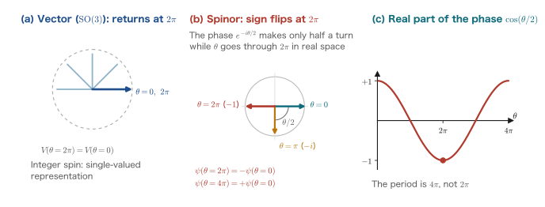
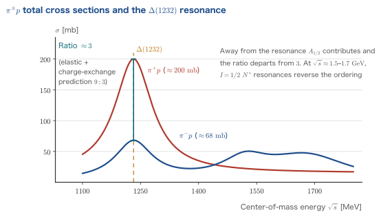

Chapter 5Symmetries, Groups, and Conservation Laws
For anyone who has studied crystallography, symmetry is “a collection of operations.” Rotate the crystal by $90^\circ$. Reflect it in a mirror. Invert it. The operations can be counted, and there are only finitely many of them. Their totality is the space group, and there are only $230$ of them. They are listed in the International Tables. All you have to do is look them up.
The symmetries of particle physics lie about two steps away from there. The first step is that the operations become continuous. A rotation by an angle $\theta$ can be varied continuously through the real number $\theta$, so there are infinitely many operations. Counting is impossible, and instead we deal only with the “infinitesimal operations,” that is, the generators. The second step is that the operations act on an internal space. Consider the operation of rotating a proton into a neutron. This is not a rotation in real space. Mathematically, however, it is exactly the same group as the rotations of spin, namely $\mathrm{SU}(2)$.
Once we have taken these two steps, the tools that crystallographers already own can be used as they are: irreducible representations, characters, the reduction formula, and selection rules. These take the same form for finite groups and continuous groups. The aim of this chapter is to build that bridge.
Standing at the center of the bridge is Noether’s theorem. If the action is invariant under a continuous transformation, one conserved quantity follows. Translation invariance gives momentum, rotation invariance gives angular momentum, and time-translation invariance gives energy. In quantum mechanics this can be written in a single line. Let $G$ be the generator of the transformation. Then
$$ [\Ham, G] = 0 \quad\Longleftrightarrow\quad \frac{\dd \braket{G}}{\dd t} = 0 . $$The electric charge, baryon number, lepton number, and isospin that we listed in Chapter 3 as “empirically valid conservation laws” all correspond to “invariance under some continuous transformation.” (Baryon number and lepton number, however, are global $\mathrm{U}(1)$ symmetries that the Standard Model Lagrangian happens to possess; they are not required by any fundamental principle, and, as we will see in Chapter 15, they can be violated.) In this chapter we clarify the mechanism, in preparation for Chapter 6 (the discrete symmetries $P,C,T$) and Chapter 13 (gauge theory and spontaneous symmetry breaking).
- The axioms of a group, the difference between finite groups and continuous groups (Lie groups), and the idea of a generator
- Derive Noether’s theorem for Lagrangian mechanics with one degree of freedom, and verify translation $\to$ momentum, rotation $\to$ angular momentum, and time translation $\to$ energy
- Symmetry in quantum mechanics: $[\Ham,G]=0$, and the fact that the degeneracy is determined by the dimension of an irreducible representation
- Representations, irreducible representations, characters, unitary representations, Schur’s lemma, and the reduction formula $n_a=\frac{1}{|G|}\sum_g \chi^{(a)}(g)^*\chi(g)$
- The generators and commutation relations of $\mathrm{SU}(2)$, the Pauli matrices, the rotation matrix $\ee^{-\ii\theta\,\bm{n}\cdot\bm{\sigma}/2}$, and the sign change under a $2\pi$ rotation
- Addition of angular momenta and Clebsch–Gordan (CG) coefficients, and the explicit form of $\bm{2}\otimes\bm{2}=\bm{3}\oplus\bm{1}$
- Isospin: the $p,n$ doublet, the $\pi$ triplet, and the prediction of the cross-section ratio $9:1:2$ at the $\Delta(1232)$ resonance (and $3:1$ for the total cross sections)
- $\mathrm{SU}(3)$ flavor, the weight diagrams of the octet and decuplet, the Gell-Mann–Okubo mass formula, and the prediction of the $\Omega^-$
- The contrasting roles of crystallographic point groups (finite groups) and of $\mathrm{SU}(2)$ and $\mathrm{SU}(3)$ (continuous groups), and their isomorphism with the classification of SALCs and phonon modes
- How the Wigner–Eckart theorem gives, at the same time, the selection rules for optical transitions and the branching ratios of particle decays; double groups and spin–orbit coupling
5.1 Symmetries, Groups, and Conservation Laws
5.1.1 What is a symmetry, and why does it form a group?
In physics, a symmetry means that “the description of the system does not change when a certain operation is applied.” For a crystal, “the atomic arrangement does not change”; for a mechanical system, “the action $S$ does not change”; for a field theory, “the Lagrangian density $\Lag$ does not change.” The objects differ, but the structure is the same.
Now consider the set $G$ of all operations that leave the system invariant. Then the following four properties hold automatically.
Definition: Group
A set $G$ with an operation $\cdot$ (composition) on it is called a group $(G,\cdot)$ if the following four conditions are satisfied.
- Closure: if $g_1,g_2\in G$, then $g_1\cdot g_2\in G$.
- Associativity: $(g_1\cdot g_2)\cdot g_3 = g_1\cdot(g_2\cdot g_3)$.
- Identity element: there exists $e\in G$ satisfying $e\cdot g = g\cdot e = g$.
- Inverse element: for every $g$ there exists $g^{-1}\in G$ satisfying $g\cdot g^{-1}=g^{-1}\cdot g=e$.
Moreover, if $g_1\cdot g_2 = g_2\cdot g_1$ always holds, the group is called an Abelian group. The number of elements $|G|$ is called the order.
Why introduce the abstraction of a “group”?
When we translate the axioms into physics one by one, each of them says nothing more than the obvious.
- Closure: if we perform an “operation that does not change the system” twice in succession, the system still does not change. So the composition is again a symmetry operation.
- Associativity: a composition of operations does not depend on “which ones we compose first.” This is natural, since we simply apply the operations in order from the left.
- Identity element: the operation “do nothing” is always a symmetry operation.
- Inverse element: if rotating by $90^\circ$ leaves the system unchanged, then rotating by $-90^\circ$ also leaves it unchanged. An operation can always be undone.
In other words, “a collection of symmetries automatically forms a group.” Conversely, group theory is the very language invented to handle symmetry. The benefit of the abstraction is that the point groups of crystals, the rotations of spin, and the flavor mixing of quarks can all be treated with exactly the same theorems. The physical contents of the three are completely different, yet one computational procedure suffices. This is the claim of this chapter.
5.1.2 Finite groups and continuous groups
Groups fall broadly into two classes according to the number of elements.
A finite group is a group with finitely many elements. The point groups of crystals are the representative examples: for instance, the cubic $O_h$ has order $48$, and the tetragonal $D_{4h}$ has order $16$. Since the elements can be counted one by one, all the information fits into a finite table, the character table. This is in the same spirit as the International Tables for Crystallography, which exhaust the space groups in tabular form. The character tables of the point groups themselves are listed in complete form in Inui et al., “Applied Group Theory” (in Japanese), and in the tables of Koster et al. (see the references at the end of this chapter).
A continuous group, and in particular a Lie group, is a group whose elements are specified by continuous parameters. The three-dimensional rotation group $\mathrm{SO}(3)$ has a total of three parameters: the rotation axis $\bm{n}$ (two parameters) and the rotation angle $\theta$ (one parameter). Because the parameters can be varied continuously, there are uncountably infinitely many elements. They cannot be counted.
What, then, do we do? The answer is “look only at the immediate neighborhood of the identity element.” Let the parameters be $\bm{\alpha}=(\alpha_1,\dots,\alpha_n)$, with $\bm{\alpha}=0$ the identity. We expand an infinitesimal transformation as
$$ \begin{equation} U(\delta\bm{\alpha}) = 1 - \ii \sum_{a=1}^{n} \delta\alpha_a\, T^a + O(\delta\alpha^2) \label{eq:5-infinitesimal} \end{equation} $$and call the $T^a$ that appear here the generators. A finite transformation is obtained by repeating the infinitesimal transformation $N$ times and letting $N\to\infty$:
(A repeated index $a$ means a sum.) In other words, a continuous group is determined entirely by a finite number of generators. For $\mathrm{SO}(3)$ there are three generators, for $\mathrm{SU}(2)$ three, and for $\mathrm{SU}(3)$ eight. We have squeezed infinitely many elements into a finite number of matrices.
The generators are not elements of the group but elements of the linear space they span (the Lie algebra). The product of two generators does not in general belong to this space (for example, $\sigma_1\sigma_2=\ii\sigma_3$ is not Hermitian, so it is not an element of $\mathrm{su}(2)$), but the commutator is always a linear combination of generators:
This relation is called the Lie algebra, and the coefficients $f^{abc}$ are called the structure constants. The structure constants carry all the properties of the group. If $f^{abc}=0$, the group is Abelian; otherwise it is non-Abelian.
| Group | Type | Number of parameters (number of generators) | Physical meaning |
|---|---|---|---|
| $\mathrm{U}(1)$ | Continuous, Abelian | 1 | Rotation of a phase. Charge conservation, phase of the superconducting order parameter |
| $\mathrm{SO}(3)$ | Continuous, non-Abelian | 3 | Three-dimensional spatial rotations. Angular momentum |
| $\mathrm{SU}(2)$ | Continuous, non-Abelian | 3 | Spin, isospin, weak isospin |
| $\mathrm{SU}(3)$ | Continuous, non-Abelian | 8 | Flavor $\mathrm{SU}(3)_F$, color $\mathrm{SU}(3)_C$ |
| Lorentz group | Continuous, non-Abelian | 6 | Three rotations + three boosts (Chapter 4) |
| $O_h$ | Finite | — (order 48) | Point group of the cubic system. Crystal-field splitting |
| $C_{2v}$ | Finite | — (order 4) | $\mathrm{H_2O}$-type molecules, surface adsorption sites |
| $O_h'$ (double group) | Finite | — (order 96) | Cubic system including spin–orbit coupling (Section 5.5) |
5.1.3 Noether’s theorem
We derive the theorem connecting symmetries and conservation laws in the simplest setting. Consider a classical mechanical system with one degree of freedom, and let the Lagrangian be $L(q,\dot q,t)$. The equation of motion is the Euler–Lagrange equation
$$ \begin{equation} \frac{\dd}{\dd t}\frac{\partial L}{\partial \dot q} - \frac{\partial L}{\partial q} = 0 \label{eq:5-EL} \end{equation} $$Now consider the transformation that shifts the coordinate slightly by a continuous parameter $\varepsilon$:
$$ q(t) \longrightarrow q'(t) = q(t) + \varepsilon\, K(q,t) $$Here $K$ is a function specifying the “direction” of the transformation ($K=1$ for a translation, and $K$ is proportional to the coordinates for a rotation).
Theorem: Noether’s theorem (one degree of freedom, classical mechanics version)
If the Lagrangian is invariant at order $O(\varepsilon)$ under the above transformation, that is, if $\delta L = 0$, then the quantity
$$ I = \frac{\partial L}{\partial \dot q}\, K $$is conserved along the motion: $\dd I/\dd t = 0$.
Derivation: From invariance to a conserved quantity
Step 1: Write down the variation of the Lagrangian. Along with $q\to q+\varepsilon K$ we have $\dot q \to \dot q + \varepsilon \dot K$ (where $\dot K = \dd K/\dd t$ is a function of $q,\dot q,t$). Therefore, by the multivariable chain rule, the change of $L$ at $O(\varepsilon)$ is
$$ \delta L = \varepsilon\left[\frac{\partial L}{\partial q}K + \frac{\partial L}{\partial \dot q}\dot K\right] $$Up to this point this is merely a Taylor expansion; no physics has entered.
Step 2: Rewrite the first term using the equation of motion. The Euler–Lagrange equation, Eq. \eqref{eq:5-EL}, means $\partial L/\partial q = \dd(\partial L/\partial\dot q)/\dd t$. Substituting this gives
$$ \frac{\delta L}{\varepsilon} = \left[\frac{\dd}{\dd t}\frac{\partial L}{\partial \dot q}\right]K + \frac{\partial L}{\partial \dot q}\dot K $$The key point is that this operation has turned a “partial derivative with respect to $q$” into a “total derivative with respect to time.”
Step 3: Combine with the product rule. The right-hand side is itself the derivative of a product $fg$:
$$ \frac{\delta L}{\varepsilon} = \frac{\dd}{\dd t}\left[\frac{\partial L}{\partial \dot q}\,K\right] $$Here we simply took $f=\partial L/\partial\dot q$ and $g=K$ and used $\dd(fg)/\dd t = \dot f g + f\dot g$ in reverse.
Step 4: Impose invariance. By assumption, $\delta L=0$. Therefore
This completes the proof. Remarkably, all we needed were just three things: the chain rule, the equation of motion, and the product rule. $\square$
Supplement: More generally, it suffices that $L$ changes by a total derivative ($\delta L = \varepsilon\,\dd\Lambda/\dd t$); the conserved quantity is then $I=(\partial L/\partial\dot q)K-\Lambda$. For systems with several degrees of freedom, one sums: $I=\sum_i(\partial L/\partial\dot q_i)K_i$.
5.1.4 Three basic examples
Example 1: Spatial translation $\to$ momentum conservation
Consider a free particle $L=\frac{1}{2}m\dot q^2$ (or a potential that does not depend on $q$). The transformation is $q\to q+\varepsilon$, that is, $K=1$ and $\dot K=0$. Then $\delta L = \varepsilon\,\partial L/\partial q = 0$ (since $L$ does not contain $q$), so the Lagrangian is indeed invariant. The conserved quantity is
$$ I = \frac{\partial L}{\partial \dot q}\cdot 1 = m\dot q = p $$that is, the momentum. We see that “the laws of physics are the same everywhere in space” and “momentum is conserved” are two ways of stating the same fact.
Example 2: Spatial rotation $\to$ angular-momentum conservation
Consider a two-dimensional central force field $L=\frac{1}{2}m(\dot x^2+\dot y^2)-V(\sqrt{x^2+y^2})$. An infinitesimal rotation about the $z$ axis is
$$ x \to x - \varepsilon y,\qquad y \to y + \varepsilon x \qquad\text{that is}\qquad K_x=-y,\quad K_y=x $$(this is the rotation matrix $\begin{pmatrix}\cos\varepsilon&-\sin\varepsilon\\ \sin\varepsilon&\cos\varepsilon\end{pmatrix}$ expanded to first order in $\varepsilon$). The kinetic energy has the form $\dot x^2+\dot y^2$ and is therefore invariant under rotations, and the potential depends only on $x^2+y^2$ and is also invariant. Hence $\delta L=0$. From the multi-degree-of-freedom version of the formula, the conserved quantity is
$$ I = \frac{\partial L}{\partial\dot x}K_x + \frac{\partial L}{\partial\dot y}K_y = m\dot x(-y) + m\dot y\,(x) = x p_y - y p_x = L_z $$that is, the $z$ component of angular momentum. Angular momentum is conserved in a central force field not because the force points toward the center, but because the potential is rotationally invariant.
Example 3: Time translation $\to$ energy conservation
This one alone has a slightly different form. The transformation that shifts time, $t\to t+\varepsilon$, moves not only the coordinates but the time itself, so the framework above cannot be used directly. Instead we calculate directly. When $L$ does not contain $t$ explicitly ($\partial L/\partial t=0$),
$$ \frac{\dd L}{\dd t} = \frac{\partial L}{\partial q}\dot q + \frac{\partial L}{\partial \dot q}\ddot q = \left[\frac{\dd}{\dd t}\frac{\partial L}{\partial\dot q}\right]\dot q + \frac{\partial L}{\partial\dot q}\ddot q = \frac{\dd}{\dd t}\left[\frac{\partial L}{\partial \dot q}\dot q\right] $$(In the second equality we used the Euler–Lagrange equation.) Moving a term to the other side gives
$$ \frac{\dd}{\dd t}\left[\frac{\partial L}{\partial\dot q}\dot q - L\right] = 0 \qquad\Longrightarrow\qquad H = p\dot q - L = \text{const.} $$$H$ is the Hamiltonian, that is, the energy. “Doing the experiment yesterday or today gives the same result” is equivalent to “energy is conserved.”
| Symmetry transformation | Group | Generator | Conserved quantity | Where it appears in this book |
|---|---|---|---|---|
| Spatial translation | $\mathbb{R}^3$ (Abelian) | $\hat{\bm{p}}$ | Momentum $\bm{p}$ | Chapters 3 and 4 |
| Time translation | $\mathbb{R}$ (Abelian) | $\Ham$ | Energy $E$ | Chapters 3 and 4 |
| Spatial rotation | $\mathrm{SO}(3)\simeq \mathrm{SU}(2)/\mathbb{Z}_2$ | $\hat{\bm{J}}$ | Angular momentum $\bm{J}$ | This chapter, Section 5.3 |
| Lorentz boost | Lorentz group | $\hat{\bm{K}}$ | $\bm{K}$ (uniform motion of the center of mass) | Chapter 4 |
| Global $\mathrm{U}(1)$ phase | $\mathrm{U}(1)$ | $\hat{Q}$ | Charge $Q$ | This chapter; Chapter 13, Section 13.3.1 |
| Isospin rotation | $\mathrm{SU}(2)_I$ | $\hat{\bm{I}}$ | Isospin $\bm{I}$ (approximate) | This chapter, Section 5.4 |
| Flavor rotation | $\mathrm{SU}(3)_F$ | $\hat{F}^a$ ($a=1..8$) | Hypercharge, etc. (approximate) | This chapter, Section 5.4 |
| Color rotation | $\mathrm{SU}(3)_C$ | $\hat{T}^a$ ($a=1..8$) | Color charge (exact) | Chapter 11 |
5.1.5 Symmetry in quantum mechanics
In quantum mechanics the story becomes even simpler. A symmetry transformation is represented by a unitary operator $U$, and “there is a symmetry” means
$$ U^\dagger \Ham\, U = \Ham \qquad\Longleftrightarrow\qquad [\Ham, U] = 0 $$For a continuous symmetry we can write $U=\exp(-\ii\alpha G)$, so extracting the first-order term in $\alpha$ gives
That is, the expectation value of the generator $G$ is conserved. This is the quantum version of Noether’s theorem. The three-step derivation of classical mechanics is condensed into a single line of Heisenberg’s equation of motion. (By writing $U=\exp(-\ii\alpha G)$, this chapter has adopted natural units with $\hbar=1$. If $\hbar$ is written explicitly, $U=\exp(-\ii\alpha G/\hbar)$ and $\dd\braket{G}/\dd t=(\ii/\hbar)\braket{[\Ham,G]}$.)
Moreover, $[\Ham,G]=0$ has a second consequence, degeneracy. If $\Ham\ket{\psi}=E\ket{\psi}$, then
$$ \Ham\left(U\ket{\psi}\right) = U\Ham\ket{\psi} = E\left(U\ket{\psi}\right) $$so $U\ket{\psi}$ also has the same energy $E$. All states that are carried into one another by symmetry operations are degenerate. What tells us how many states are degenerate is the dimension of the irreducible representation of the next section.
Connection to Materials Science: Global U(1) symmetry, charge conservation, and superconductivity
The simplest continuous symmetry is the operation of shifting the phase of the wave function everywhere at once:
$$ \psi(\xx) \longrightarrow \ee^{\ii\alpha}\psi(\xx),\qquad \alpha = \text{constant} $$The Lagrangians of both the Schrödinger field and the Dirac field are bilinear forms containing equal numbers of $\psi$ and $\psi^*$ ($\bar\psi$), so the phases cancel and the Lagrangian is invariant. (What Noether’s theorem is applied to is the action, not the equation. That the equation is linear in $\psi$ separately guarantees that if $\psi$ is a solution, so is $\ee^{\ii\alpha}\psi$.) Applying Noether’s theorem to this $\mathrm{U}(1)$ symmetry yields charge as the conserved quantity (the field-theory derivation is in Chapter 13, Section 13.3.1). The empirical rule of Chapter 3 that “charge is conserved” was in fact the statement that “where we place the origin of the phase is irrelevant to the physics.”
In a superconductor, however, this $\mathrm{U}(1)$ is spontaneously broken. The BCS state is a condensate of Cooper pairs, and the order parameter $\Delta = \abs{\Delta}\ee^{\ii\varphi}$ selects a particular phase $\varphi$. The Hamiltonian is $\mathrm{U}(1)$-invariant, yet the ground state is not; this is spontaneous symmetry breaking (Chapter 13). As a result, the photon acquires an effective mass. This is the Anderson–Higgs mechanism, known in condensed matter physics as the Meissner effect.
Let us get a feel for this with numbers. The mass $m_\gamma$ acquired by a photon in a superconductor and the London penetration depth $\lambda_L$ are related by $m_\gamma c^2 = \hbar c/\lambda_L$. For aluminum ($\lambda_L\simeq 16\ \mathrm{nm}$),
$$ m_\gamma c^2 = \frac{\hbar c}{\lambda_L} = \frac{197.3\ \mathrm{MeV\,fm}}{16\ \mathrm{nm}} = \frac{1.973\times10^{-7}\ \mathrm{eV\,m}}{1.6\times10^{-8}\ \mathrm{m}} \approx 12.3\ \mathrm{eV} $$For niobium ($\lambda_L\simeq 39\ \mathrm{nm}$) it is about $5\ \mathrm{eV}$. On the other hand, the mass that the $W$ boson obtains when $\mathrm{SU}(2)_L\times\mathrm{U}(1)_Y$ is broken in the weak interaction is $m_W=80.4\ \mathrm{GeV}$, and the corresponding “penetration depth” is $\hbar c/m_Wc^2 = 197.3\ \mathrm{MeV\,fm}/80377\ \mathrm{MeV} = 2.5\times10^{-3}\ \mathrm{fm}$. Since $80.4\ \mathrm{GeV}/12.3\ \mathrm{eV}\simeq6.5\times10^{9}$, the scales differ by nearly ten orders of magnitude, yet both are described by the same kind of Abelian Higgs (Ginzburg–Landau) equation. Anyone who understands superconductivity already understands half of the Higgs mechanism.
However, “the same equation” holds only for the structure; the two are not completely identical. The London equation of superconductivity, $\nabla^2\bm{B}=\bm{B}/\lambda_L^2$, is a nonrelativistic and static relation, and what $\hbar c/\lambda_L$ gives is the mass corresponding to the screening length of the transverse (Meissner) response. The longitudinal mode is a separate matter; in Al it is the plasmon, $\hbar\omega_p\simeq15\ \mathrm{eV}$. That in the Lorentz-invariant Abelian Higgs model the transverse and longitudinal modes have the same mass shows the limit of this correspondence (Chapter 13).
5.2 Group Representations
5.2.1 What is a representation?
A group is an abstract “collection of operations” and, as it stands, cannot be used for calculation. To calculate, we must assign a matrix $D(g)$ to each element $g$ and translate the group multiplication into matrix multiplication.
Definition: Representation
A map that assigns to each element $g$ of a group $G$ an invertible matrix $D(g)$ on a $d$-dimensional vector space $V$ and satisfies
$$ \begin{equation} D(g_1)\,D(g_2) = D(g_1 g_2)\qquad \text{(for all } g_1,g_2\in G\text{)} \label{eq:5-rep} \end{equation} $$is called a representation $D$ of $G$, and $d$ is its dimension. $V$ is called the representation space. In particular, when every $D(g)$ is a unitary matrix, it is called a unitary representation.
In physics, the representation space $V$ is the space of states. For a spin-$1/2$ particle, it is the two-dimensional space spanned by $V=\{\ket{\uparrow},\ket{\downarrow}\}$, and the $2\times2$ matrix $D(R)$ corresponding to a rotation $R$ acts on that space. For a crystal, $V$ is the space spanned by “the three $p$ orbitals on a given site,” and the elements of the point group mix them.
Math Note: Why it suffices to consider only unitary representations
In quantum mechanics probability must be conserved, so symmetry operations preserve the norm. That is, $D(g)$ must be unitary. This is a requirement from physics, but in fact it costs nothing mathematically either.
Theorem: Every finite-dimensional representation of a finite group, or of a compact Lie group (such as $\mathrm{SU}(2)$, $\mathrm{SU}(3)$, $\mathrm{SO}(3)$), can be carried into a unitary representation by a suitable change of basis.
Key points of the proof: From the given inner product $\braket{u,v}$, form a new inner product by averaging over the group:
$$ \braket{u,v}' = \frac{1}{|G|}\sum_{g\in G}\braket{D(g)u,\;D(g)v} $$(for a continuous group, replace the sum by an integral with respect to the invariant measure). With respect to this inner product, $D(g)$ is unitary. The key is that “the average over the whole group can be defined as a finite quantity,” which is the role of compactness. Since the Lorentz group is not compact, it has no finite-dimensional unitary representation (apart from the trivial one). This is why, in Chapter 9, the Lorentz invariant is $\bar\psi\psi=\psi^\dagger\gamma^0\psi$ rather than $\psi^\dagger\psi$, and why we must go to the trouble of introducing the adjoint spinor $\bar\psi$ (Section 9.2.6).
5.2.2 Reducible and irreducible representations
Given a representation, a good choice of basis may bring all the $D(g)$ simultaneously into block-diagonal form:
$$ D(g) = \begin{pmatrix} D^{(1)}(g) & 0 \\ 0 & D^{(2)}(g)\end{pmatrix} \qquad\text{(simultaneously for all } g \text{)} $$In this case the representation is said to be reducible, and we write $D = D^{(1)}\oplus D^{(2)}$. A representation that cannot be decomposed any further by any change of basis is called an irreducible representation (irrep).
Physical Meaning: An irreducible representation is a “multiplet that cannot be split any further”
When $[\Ham,D(g)]=0$, as we saw in Section 5.1.5, energy eigenstates are carried into one another by symmetry operations. A set of states belonging to an irreducible representation always mixes among themselves under symmetry operations and never leaves the set. Therefore
- all states belonging to the same irreducible representation have exactly the same energy (they are degenerate)
- degeneracy = dimension of the irreducible representation
This is a strong conclusion. In particle physics, the reason the $p$ and the $n$ have the same mass (within the range of isospin symmetry) is that together they form the two-dimensional irreducible representation of $\mathrm{SU}(2)_I$. In crystals, the reason the $t_{2g}$ orbitals placed in a field of cubic symmetry are threefold degenerate is that they form the three-dimensional irreducible representation $T_{2g}$ of $O_h$. It is exactly the same argument.
5.2.3 Characters and the reduction formula
The quantity that condenses the information of a representation is the character.
Definition: Character
The character of a representation $D$ is the trace of the representation matrix,
$$ \chi(g) \equiv \Tr D(g) = \sum_{i} D_{ii}(g) $$Since the trace is invariant under a similarity transformation $D\to S D S^{-1}$, the character is independent of the choice of basis. Also, conjugate elements $g$ and $hgh^{-1}$ have the same character, so the character is determined once for each conjugacy class.
For a finite group, the following orthogonality relation holds for the characters of irreducible representations:
$$ \begin{equation} \frac{1}{|G|}\sum_{g\in G}\chi^{(a)}(g)^{*}\,\chi^{(b)}(g) = \delta_{ab} \label{eq:5-orthogonality} \end{equation} $$Using this, we can compute mechanically how many times a given (in general reducible) representation $\Gamma$ contains each irreducible representation. When it decomposes as $\Gamma = \bigoplus_a n_a\,\Gamma^{(a)}$, taking the characters of both sides gives $\chi(g)=\sum_a n_a\chi^{(a)}(g)$, so applying Eq. \eqref{eq:5-orthogonality} we obtain
This is called the reduction formula. For a continuous group, one simply replaces $\frac{1}{|G|}\sum_g$ by an integral with respect to the invariant measure, and the form is unchanged.
Connection to Materials Science: The reduction formula is exactly SALC and phonon mode classification
Equation \eqref{eq:5-reduction} is the formula used in particle physics to count “how many octets are contained in $\bm{3}\otimes\bar{\bm{3}}$,” but exactly the same formula is used routinely in first-principles calculations.
(1) Symmetry-adapted linear combinations of atomic orbitals (SALC). A set of ligand $p$ or $s$ orbitals forms a reducible representation of the point group. If we decompose it into irreducible representations with Eq. \eqref{eq:5-reduction}, which orbitals of the central metal ($a_{1g},e_g,t_{1u},\dots$) it can hybridize with is determined without computing a single overlap integral. The skeleton of the molecular orbital diagram is fixed by group theory alone.
(2) Classification of phonon modes. The $3N$ displacement vectors at the $\Gamma$ point of a unit cell consisting of $N$ atoms again form a reducible representation $\Gamma_{\text{total}}$ of the point group. Its character is
$$ \chi_{\text{total}}(g) = N_{\text{unmoved}}(g)\times\left(\pm 1 + 2\cos\theta_g\right) $$(where $N_{\text{unmoved}}$ is the number of atoms left unmoved by the operation $g$; $+$ for a proper rotation and $-$ for a rotoreflection or inversion). Decomposing this into irreducible representations and subtracting the translations $\Gamma_{\text{acoustic}}$ gives
$$ \Gamma_{\text{optic}} = \Gamma_{\text{total}} - \Gamma_{\text{acoustic}} $$and one can decide whether each mode is infrared active (does it belong to the same irreducible representation as $x,y,z$?) or Raman active (does it belong to the same irreducible representation as the quadratic forms $x^2,xy,\dots$?). Which irreducible representation a soft mode with an imaginary frequency ($\omega^2<0$; in computational codes there is a convention of displaying $-\sqrt{\abs{\omega^2}}$ as a negative value) belongs to determines which subgroup the structure falls to in a structural phase transition. This is exactly the same logic as in particle physics, where “which representation the Higgs field belongs to determines which subgroup $\mathrm{U}(1)_{\text{EM}}$ the group $\mathrm{SU}(2)\times\mathrm{U}(1)$ is broken to” (Chapter 13). The term isotropy subgroup of Landau theory and the term residual symmetry of particle physics refer to the same thing.
5.2.4 Schur’s lemma
Theorem: Schur’s lemma
(First lemma) Let $D$ be an irreducible representation. If a matrix $A$ satisfies $A\,D(g)=D(g)\,A$ for all $g$, then $A$ is a constant multiple of the identity matrix: $A=\lambda\,\mathbb{1}$.
(Second lemma) Let $D^{(1)},D^{(2)}$ be irreducible representations of dimensions $d_1,d_2$, respectively. If $A\,D^{(1)}(g)=D^{(2)}(g)\,A$ holds for all $g$, then $A=0$ unless $D^{(1)}$ and $D^{(2)}$ are equivalent.
Derivation: Proof of the first lemma (it takes only three lines)
Step 1: Pick out an eigenvector. We may take $A$ to be Hermitian (if we assume a unitary representation, it can be split into a Hermitian part and an anti-Hermitian part). A Hermitian matrix has at least one real eigenvalue; let $\lambda$ be one of them, and let $V_\lambda$ be the eigenspace belonging to it. $V_\lambda$ is not the space consisting of the zero vector alone ($V_\lambda\ne\{0\}$).
Step 2: Show that the eigenspace is an invariant subspace. Let $v\in V_\lambda$, that is, $Av=\lambda v$. From the assumption $AD(g)=D(g)A$,
$$ A\left(D(g)v\right) = D(g)\,A v = \lambda\left(D(g)v\right) $$so $D(g)v$ is also an eigenvector with eigenvalue $\lambda$. In other words, $V_\lambda$ is closed under all $D(g)$.
Step 3: Use irreducibility. That $D$ is irreducible meant that “it has no nontrivial invariant subspace.” Since $V_\lambda$ is an invariant subspace, we must have $V_\lambda=V$ (the whole space). That is, $A$ has eigenvalue $\lambda$ on the whole space. Hence $A=\lambda\mathbb{1}$. $\square$
Physical Meaning: Why Casimir operators label multiplets
The greatest application of Schur’s first lemma is the Casimir operator. For $\mathrm{SU}(2)$, $\bm{J}^2=J_x^2+J_y^2+J_z^2$ commutes with all the generators ($[\bm{J}^2,J_i]=0$). Therefore it also commutes with all $D(g)$, and on an irreducible representation it must be a constant multiple of the identity matrix. Writing that constant as $j(j+1)$ gives the angular momentum quantum number $j$ that we have known since our student days.
In other words, the origin of the fact that “the eigenvalue of $\bm{J}^2$ has the form $j(j+1)$” is neither a differential equation nor a boundary condition, but Schur’s lemma. By the same logic, $\mathrm{SU}(3)$ has two independent Casimir operators, and the pair of their eigenvalues labels the irreducible representation ($\bm{1},\bm{3},\bm{8},\bm{10},\dots$). The same holds for crystallographic point groups: the projection operator $P^{(a)}=\frac{d_a}{|G|}\sum_g\chi^{(a)}(g)^*D(g)$, which block-diagonalizes a reducible representation, works thanks to Schur’s lemma.
5.3 SU(2) and Angular Momentum
5.3.1 Definition of SU(2) and counting the generators
Definition: SU(2)
$\mathrm{SU}(2)$ is the group consisting of all $2\times2$ complex matrices $U$ that satisfy
$$ U^\dagger U = \mathbb{1}\quad\text{(unitary)},\qquad \det U = 1\quad\text{(special)} $$The letter $\mathrm{S}$ stands for special ($\det=1$), $\mathrm{U}$ for unitary, and $(2)$ for the order of the matrices.
First we count the degrees of freedom. A $2\times2$ complex matrix has four complex components, that is, eight real parameters. The unitarity condition $U^\dagger U=\mathbb{1}$ is an equality between Hermitian matrices, so it imposes four independent real conditions (the two diagonal entries are real, and the one off-diagonal entry is complex, which gives two). Four parameters remain. In addition, $\det U=1$ imposes one real condition ($\abs{\det U}=1$ already follows from unitarity, so only the condition on the phase is left). Hence there are three real parameters, and three generators.
The properties of the generators are determined by substituting $U=\mathbb{1}-\ii\varepsilon_a T^a$ of Eq. \eqref{eq:5-infinitesimal} into the two conditions.
Derivation: The generators are “Hermitian and traceless”
Step 1: Hermiticity from unitarity. To first order in $\varepsilon$,
$$ U^\dagger U = (\mathbb{1}+\ii\varepsilon_a T^{a\dagger})(\mathbb{1}-\ii\varepsilon_b T^b) = \mathbb{1} + \ii\varepsilon_a\left(T^{a\dagger}-T^{a}\right) + O(\varepsilon^2) $$For this to equal $\mathbb{1}$ we need $T^{a\dagger}=T^a$; that is, the generators must be Hermitian matrices. (This is exactly why we pulled out $-\ii$ explicitly in Eq. \eqref{eq:5-infinitesimal}. The requirement that the generators correspond to physical quantities, and hence be Hermitian, dictates where the $\ii$ is placed.)
Step 2: Tracelessness from the determinant condition. We use the identity $\det(\ee^{M}) = \ee^{\Tr M}$, valid for any matrix. Since $U=\exp(-\ii\alpha_a T^a)$,
$$ \det U = \exp\left(-\ii\,\alpha_a \Tr T^a\right) = 1 \qquad\Longrightarrow\qquad \Tr T^a = 0 $$Step 3: Counting. A $2\times2$ Hermitian matrix has the form $\begin{pmatrix} a & b-\ii c\\ b+\ii c & d\end{pmatrix}$ ($a,b,c,d$ real) and so is four-dimensional over the reals. Imposing the traceless condition $a+d=0$ reduces this to three real dimensions. We can take $\{\sigma_1,\sigma_2,\sigma_3\}$ as a basis. Everything up to this point is a necessary consequence; what remains is a convention for the normalization. Choosing $T^a=\sigma_a/2$, so that the commutation relation takes the same form as that of angular momentum, $[J_a,J_b]=\ii\epsilon_{abc}J_c$, is the convention of this book (and the standard one in particle physics). If we took $\sigma_a$ itself as the generators, the structure constants would merely change to $2\epsilon_{abc}$, and the group itself would be the same. $\square$
Definition: Pauli matrices and the generators of SU(2)
$$ \sigma_1 = \begin{pmatrix}0&1\\1&0\end{pmatrix},\qquad \sigma_2 = \begin{pmatrix}0&-\ii\\ \ii&0\end{pmatrix},\qquad \sigma_3 = \begin{pmatrix}1&0\\0&-1\end{pmatrix} $$We take the generators to be $T^a = \sigma_a/2$. The basic identity is
$$ \begin{equation} \sigma_a\sigma_b = \delta_{ab}\,\mathbb{1} + \ii\,\epsilon_{abc}\,\sigma_c \label{eq:5-pauli-product} \end{equation} $$from which the commutation and anticommutation relations can be read off at the same time:
$$ [\sigma_a,\sigma_b]=2\ii\epsilon_{abc}\sigma_c,\qquad \{\sigma_a,\sigma_b\}=2\delta_{ab}\mathbb{1} $$Therefore the Lie algebra of $\mathrm{SU}(2)$ is
The structure constants are the totally antisymmetric tensor $f^{abc}=\epsilon^{abc}$. This coincides exactly (in natural units with $\hbar=1$) with the commutation relation $[J_a,J_b]=\ii\hbar\epsilon_{abc}J_c$ of angular momentum in quantum mechanics. The representation theory of $\mathrm{SU}(2)$ and the theory of angular momentum are one and the same.
5.3.2 Rotation matrices and the sign of a $2\pi$ rotation
The $\mathrm{SU}(2)$ element corresponding to a rotation by an angle $\theta$ about a unit vector $\bm{n}$ is
$$ \begin{equation} U(\bm{n},\theta) = \exp\!\left(-\ii\,\frac{\theta}{2}\,\bm{n}\cdot\bm{\sigma}\right) \label{eq:5-rotation} \end{equation} $$Although there is a matrix inside the exponential function, in this case the series can be summed in closed form.
Derivation: $\ee^{-\ii\theta\bm{n}\cdot\bm{\sigma}/2}=\cos\frac{\theta}{2}-\ii(\bm{n}\cdot\bm{\sigma})\sin\frac{\theta}{2}$
Step 1: Show that $(\bm{n}\cdot\bm{\sigma})^2=\mathbb{1}$. Using Eq. \eqref{eq:5-pauli-product},
$$ (\bm{n}\cdot\bm{\sigma})^2 = n_a n_b\,\sigma_a\sigma_b = n_a n_b\left(\delta_{ab}\mathbb{1}+\ii\epsilon_{abc}\sigma_c\right) = \abs{\bm{n}}^2\,\mathbb{1} + 0 = \mathbb{1} $$The second term vanishes because $n_an_b$ is symmetric under $a\leftrightarrow b$ while $\epsilon_{abc}$ is antisymmetric. Since $\bm{n}$ is a unit vector, $\abs{\bm{n}}^2=1$.
Step 2: Separate the powers into even and odd. By Step 1, $(\bm{n}\cdot\bm{\sigma})^{2k}=\mathbb{1}$ and $(\bm{n}\cdot\bm{\sigma})^{2k+1}=\bm{n}\cdot\bm{\sigma}$. Splitting the Taylor expansion of the exponential function into even and odd terms gives
$$ \ee^{-\ii\frac{\theta}{2}\bm{n}\cdot\bm{\sigma}} = \sum_{k=0}^{\infty}\frac{(-\ii\theta/2)^{2k}}{(2k)!}\mathbb{1} + \sum_{k=0}^{\infty}\frac{(-\ii\theta/2)^{2k+1}}{(2k+1)!}(\bm{n}\cdot\bm{\sigma}) $$Step 3: Recognize the trigonometric functions. Using $(-\ii)^{2k}=(-1)^k$ and $(-\ii)^{2k+1}=-\ii(-1)^k$, the first sum is $\cos(\theta/2)$ and the second is $-\ii\sin(\theta/2)$. Therefore
$\square$ (This formula is the matrix version of Euler’s formula $\ee^{\ii x}=\cos x+\ii\sin x$.)
Let us now substitute $\theta=2\pi$. Since $\cos\pi=-1$ and $\sin\pi=0$,
Rotating space by $360^\circ$, an operation that is “the same as doing nothing,” amounts to multiplying a spinor by $-1$. To return to the original state we must rotate by $\theta=4\pi$, that is, $720^\circ$: $U(\bm{n},4\pi)=+\mathbb{1}$.

Caution: $\mathrm{SU}(2)$ and $\mathrm{SO}(3)$ are not the same
The two have the same Lie algebra, Eq. \eqref{eq:5-su2-algebra}, but as groups they differ. The elements $U$ and $-U$ of $\mathrm{SU}(2)$ give the same spatial rotation $R\in\mathrm{SO}(3)$. The correspondence is $2:1$; one writes $\mathrm{SO}(3)\simeq \mathrm{SU}(2)/\{\pm\mathbb{1}\}$, or says that “$\mathrm{SU}(2)$ is the double cover of $\mathrm{SO}(3)$.”
This $2$-to-$1$ correspondence is the reason why the (genuine) representations of $\mathrm{SO}(3)$ are limited to integer spins $j=0,1,2,\dots$, whereas $\mathrm{SU}(2)$ also allows half-integer values $j=1/2,3/2,\dots$. What is physically needed is $\mathrm{SU}(2)$. The sign $-1$ is an overall phase of the state and so cannot be observed by itself, but it becomes visible through interference. Indeed, in 1975 an experiment was carried out in which a magnetic field applied to only one path of a neutron interferometer rotates the neutron spin by $2\pi$ and the interference fringes are inverted, confirming that the sign is real.
5.3.3 Irreducible representations and weight diagrams
The irreducible representations of $\mathrm{SU}(2)$ are nothing other than angular momentum in quantum mechanics. The eigenvalue $m$ of $J_3$ is called the weight, and the raising and lowering operators $J_\pm = J_1\pm\ii J_2$ shift $m$ by $\pm1$:
$$ [J_3,J_\pm]=\pm J_\pm,\qquad J_\pm\ket{j,m}=\sqrt{j(j+1)-m(m\pm1)}\;\ket{j,m\pm1} $$For the number of states to be finite, the raising and lowering must terminate, and from this follow $j=0,\tfrac12,1,\tfrac32,\dots$ and $m=-j,-j+1,\dots,j$. The dimension of the irreducible representation is $d=2j+1$.
| $j$ | Dimension $2j+1$ | Symbol | Weights $m$ | Examples in physics |
|---|---|---|---|---|
| $0$ | 1 | $\bm{1}$ (singlet) | $0$ | spin-0 mesons, isospin-singlet $\Lambda$ |
| $1/2$ | 2 | $\bm{2}$ (doublet) | $\pm\tfrac12$ | electron spin, nucleon $(p,n)$, quarks $(u,d)$ |
| $1$ | 3 | $\bm{3}$ (triplet) | $-1,0,+1$ | $p$ orbital, $\pi$ meson $(\pi^+,\pi^0,\pi^-)$, weak-isospin triplet $(W^1,W^2,W^3)$ |
| $3/2$ | 4 | $\bm{4}$ (quartet) | $\pm\tfrac12,\pm\tfrac32$ | $\Delta(1232)$ quartet |
| $2$ | 5 | $\bm{5}$ (quintet) | $-2,\dots,+2$ | $d$ orbital, $L=2$ states |
5.3.4 Addition of angular momenta and Clebsch–Gordan coefficients
Combining two $\mathrm{SU}(2)$ systems (for example, two electron spins, or a $\pi$ meson and a nucleon) gives the tensor product representation $\bm{d_1}\otimes\bm{d_2}$. In general this is reducible and decomposes into a direct sum of irreducible representations:
One can check that the dimensions add up: $(2j_1+1)(2j_2+1)=\sum_{j=\abs{j_1-j_2}}^{j_1+j_2}(2j+1)$. The coefficients of the change of basis are the Clebsch–Gordan coefficients (CG coefficients):
$$ \begin{equation} \ket{j\,m} = \sum_{m_1,m_2} \braket{j_1 m_1\, j_2 m_2 | j\,m}\;\ket{j_1 m_1}\ket{j_2 m_2} \label{eq:5-cg-def} \end{equation} $$Here the terms for which $m=m_1+m_2$ does not hold automatically vanish (because $J_3$ is additive). A table of CG coefficients is not something to memorize: you can construct it yourself using the raising and lowering operators. Let us do so.
Derivation: $\tfrac12\otimes\tfrac12 = 1\oplus 0$, that is, $\bm{2}\otimes\bm{2}=\bm{3}\oplus\bm{1}$
Step 0: Count the states. The two-particle product states are the four states $\ket{\uparrow\uparrow},\ket{\uparrow\downarrow},\ket{\downarrow\uparrow},\ket{\downarrow\downarrow}$. The values of $m=m_1+m_2$ are $+1,0,0,-1$. Since there is only one state with $m=+1$, the largest $j$ is $1$. The remaining $4-3=1$ state forms $j=0$. We therefore expect $\bm{2}\otimes\bm{2}=\bm{3}\oplus\bm{1}$.
Step 1: Start from the highest-weight state. Since there is only one state with $m=+1$, it is itself the highest-weight state of $j=1$:
$$ \ket{1,+1} = \ket{\uparrow\uparrow} $$Step 2: Apply the lowering operator. The lowering operator of the combined system is $J_-=J_-^{(1)}+J_-^{(2)}$. Acting on the left-hand side gives
$$ J_-\ket{1,1} = \sqrt{j(j+1)-m(m-1)}\,\ket{1,0} = \sqrt{2-0}\;\ket{1,0}=\sqrt{2}\,\ket{1,0} $$Acting on the right-hand side, for each particle $J_-\ket{\uparrow}=\ket{\downarrow}$ (the coefficient is $\sqrt{\frac34-(\frac12)(-\frac12)}=1$), so
$$ \left(J_-^{(1)}+J_-^{(2)}\right)\ket{\uparrow\uparrow} = \ket{\downarrow\uparrow}+\ket{\uparrow\downarrow} $$Equating the two and dividing by $\sqrt2$, we obtain
$$ \ket{1,0} = \frac{1}{\sqrt2}\left(\ket{\uparrow\downarrow}+\ket{\downarrow\uparrow}\right) $$Step 3: Lower once more. Similarly, $J_-\ket{1,0}=\sqrt{2-0}\ket{1,-1}$, and the right-hand side is $\ket{\downarrow\downarrow}+\ket{\downarrow\downarrow}$ divided by $\sqrt2$, that is, $\sqrt2\ket{\downarrow\downarrow}$. Hence
$$ \ket{1,-1}=\ket{\downarrow\downarrow} $$Step 4: The orthogonal state is the singlet. The $m=0$ space is two-dimensional (spanned by $\ket{\uparrow\downarrow},\ket{\downarrow\uparrow}$), and $\ket{1,0}$ has been used up. The remaining normalized orthogonal state is $j=0$:
$$ \ket{0,0} = \frac{1}{\sqrt2}\left(\ket{\uparrow\downarrow}-\ket{\downarrow\uparrow}\right) $$Verification: $J_+\ket{0,0} = \frac{1}{\sqrt2}(\ket{\uparrow\uparrow}-\ket{\uparrow\uparrow})=0$ and $J_-\ket{0,0}=\frac{1}{\sqrt2}(\ket{\downarrow\downarrow}-\ket{\downarrow\downarrow})=0$. It vanishes under both raising and lowering, so it is indeed a one-dimensional irreducible representation. $\square$
Connection to Materials Science: The triplet–singlet splitting is magnetism itself
The decomposition in Eq. \eqref{eq:5-triplet-singlet} is used routinely in solid-state physics, earlier than in particle physics. The total wave function of a two-electron system must be antisymmetric (by Fermi statistics), so only the following combinations are allowed:
- spin triplet (symmetric) $\times$ orbital antisymmetric $\to$ the electrons stay apart $\to$ the Coulomb repulsion is small
- spin singlet (antisymmetric) $\times$ orbital symmetric $\to$ the electrons approach each other $\to$ the Coulomb repulsion is large
This splitting (determined by the exchange integral $J$, and equal to a width of $2J$ in the convention used below) is the origin of Hund’s rule. Rewriting it as an effective Hamiltonian gives
$$ \Ham_{\text{eff}} = -2J\,\bm{S}_1\cdot\bm{S}_2 = -J\left[\left(\bm{S}_1+\bm{S}_2\right)^2 - \bm{S}_1^2-\bm{S}_2^2\right] $$which is the Heisenberg model. The rewriting on the right-hand side is precisely the operation of Section 5.2.4, “classify by the Casimir operator of the total angular momentum $\bm{J}=\bm{S}_1+\bm{S}_2$.” For $S=1$, $(\bm{S}_1+\bm{S}_2)^2=2$, and for $S=0$ it is $0$; since $\bm{S}_i^2=3/4$, the eigenvalues are $-J/2$ and $3J/2$, and the difference is $2J$. The calculation of combining a $\pi$ meson and a nucleon in particle physics and the calculation of evaluating the exchange interaction in a magnet draw on the same table of CG coefficients.
5.4 Flavor Symmetry
5.4.1 Isospin — the proton and the neutron are two states of the same particle
In 1932, just after Chadwick discovered the neutron, Heisenberg noticed something. The proton and the neutron have almost equal masses:
$$ m_p = 938.272\ \mathrm{MeV},\qquad m_n = 939.565\ \mathrm{MeV},\qquad \frac{m_n-m_p}{\bar m} = \frac{1.293}{938.9} = 1.4\times10^{-3} $$They differ by only $0.14\%$. Moreover, when we compare nuclear-force experiments ($pp$ scattering, $pn$ scattering, and the $nn$ scattering length, which cannot be measured with a free-neutron target and is therefore determined indirectly from, for example, $nd$ breakup reactions), the strong interaction appears not to distinguish the two once electromagnetic effects are subtracted.
Heisenberg therefore proposed that “the proton and the neutron are two states, in an internal space, of the same particle (the nucleon $N$).” In exactly the same form as the two states $\ket{\uparrow},\ket{\downarrow}$ of the electron spin, we write
$$ \begin{equation} N = \begin{pmatrix} p \\ n \end{pmatrix},\qquad \ket{p}=\ket{\tfrac12,+\tfrac12},\qquad \ket{n}=\ket{\tfrac12,-\tfrac12} \label{eq:5-nucleon-doublet} \end{equation} $$The $\mathrm{SU}(2)$ acting on this internal space is called isospin (isotopic spin) $\mathrm{SU}(2)_I$, and its generators are written $I_a = \tau_a/2$ ($\tau_a$ are matrices of the same form as the Pauli matrices).
To be historically precise, what Heisenberg introduced in 1932 went only as far as this “formalism that regards $p,n$ as two states”; his model itself had no $nn$ force and explained the $pn$ force by the exchange of an electron. That the nuclear force is independent of charge (charge independence) was established by the $pp$ scattering experiments of 1936 (Tuve–Heydenburg–Hafstad) and their analysis (Breit–Condon–Present, Cassen–Condon); it was Wigner (1937) who formulated this as an $\mathrm{SU}(2)$ symmetry and named it “isotopic spin.”
Caution: Isospin is not a rotation in position space
An isospin “rotation” does not mean that anything rotates in position space. It is an operation that mixes $p$ and $n$ in an abstract internal space. For example, a rotation by $\pi$ about the $I_2$ axis induces $\ket{p}\to\ket{n}$, $\ket{n}\to-\ket{p}$. The angular momentum in position space and the isospin are conserved independently ($[\bm{J},\bm{I}]=0$). The notation looks alike only because both are representations of the same group, $\mathrm{SU}(2)$.
Moreover, isospin symmetry is not exact. There are two sources of breaking. (i) The electromagnetic interaction distinguishes $p$ from $n$ (their charges differ). (ii) The $u$ and $d$ quarks have different masses ($m_u\simeq2.16\ \mathrm{MeV}$, $m_d\simeq4.67\ \mathrm{MeV}$). Both are small compared with the scale of the strong interaction, $\Lambda_{\mathrm{QCD}}\simeq200\ \mathrm{MeV}$, so isospin is an approximate symmetry that holds to an accuracy of a few percent. In terms of crystals, it is like treating a slightly distorted cubic crystal as cubic for the time being.
5.4.2 The $\pi$ meson triplet and the Gell-Mann–Nishijima relation
There are three kinds of $\pi$ meson, and their masses are again well aligned:
$$ m_{\pi^\pm} = 139.570\ \mathrm{MeV},\qquad m_{\pi^0}=134.977\ \mathrm{MeV} $$The difference is $4.6\ \mathrm{MeV}$, or $3.4\%$. That the three form one set means $2I+1=3$, that is, an $I=1$ triplet:
$$ \ket{\pi^+}=\ket{1,+1},\qquad \ket{\pi^0}=\ket{1,0},\qquad \ket{\pi^-}=\ket{1,-1} $$Looking at the relation between the third component $I_3$ of isospin and the charge $Q$, we have $Q=I_3+\tfrac12$ for the nucleon and $Q=I_3$ for the $\pi$ meson. What unifies these is
the Gell-Mann–Nishijima relation. Here $B$ is the baryon number, $S$ is the strangeness, and $Y\equiv B+S$ is called the hypercharge.
| Multiplet | $I$ | Members (in decreasing order of $I_3$) | Mass [MeV] | $B$ | $S$ | $Y$ |
|---|---|---|---|---|---|---|
| Nucleon $N$ | $1/2$ | $p\ (+\tfrac12)$, $n\ (-\tfrac12)$ | 938.272, 939.565 | 1 | 0 | 1 |
| Pion $\pi$ | $1$ | $\pi^+,\pi^0,\pi^-$ | 139.570, 134.977, 139.570 | 0 | 0 | 0 |
| Delta $\Delta(1232)$ | $3/2$ | $\Delta^{++},\Delta^{+},\Delta^{0},\Delta^{-}$ | $\simeq 1232$ (width $\Gamma\simeq117$) | 1 | 0 | 1 |
| Lambda $\Lambda$ | $0$ | $\Lambda^0$ | 1115.68 | 1 | $-1$ | 0 |
| Sigma $\Sigma$ | $1$ | $\Sigma^+,\Sigma^0,\Sigma^-$ | 1189.37, 1192.64, 1197.45 | 1 | $-1$ | 0 |
| Xi $\Xi$ | $1/2$ | $\Xi^0,\Xi^-$ | 1314.86, 1321.71 | 1 | $-2$ | $-1$ |
| Kaon $K$ | $1/2$ | $K^+,K^0$ | 493.677, 497.611 | 0 | $+1$ | $+1$ |
| Omega $\Omega^-$ | $0$ | $\Omega^-$ | 1672.45 | 1 | $-3$ | $-2$ |
The values are from the Particle Data Group. That the mass differences within each multiplet stay within a few MeV is the experimental evidence for isospin symmetry.
5.4.3 Predicting cross-section ratios with CG coefficients
What shows that isospin symmetry is more than mere taxonomy is the prediction of scattering amplitudes. The logic is as follows.
Claim: The amplitude of the strong interaction depends only on the total isospin $I$
If the Hamiltonian of the strong interaction is invariant under $\mathrm{SU}(2)_I$, then $[\Ham_{\text{strong}},\bm{I}]=0$. By Schur’s lemma (Section 5.2.4), $\Ham_{\text{strong}}$ is a constant multiple of the identity matrix on each irreducible representation. Therefore the transition amplitude takes the form
$$ \braket{I'\,I_3' | \Ham_{\text{strong}} | I\,I_3} = A_I\;\delta_{II'}\delta_{I_3I_3'} $$where $A_I$ does not depend on $I_3$. All of the unknown dynamics (the details of QCD) is packed into $A_I$, and the $I_3$ dependence, that is, which charge state we have, is determined by the CG coefficients alone. This is why ratios can be predicted without knowing the dynamics.
Consider $\pi N$ scattering. Since $\pi$ has $I=1$ and $N$ has $I=1/2$, combining them gives, by Eq. \eqref{eq:5-cg-decomposition},
$$ 1\otimes\tfrac12 = \tfrac32\ \oplus\ \tfrac12 $$that is, there are only two independent amplitudes, $A_{3/2}$ and $A_{1/2}$. We construct the necessary CG coefficients by the same procedure as in Section 5.3.4.
Derivation: Constructing the CG coefficients for $1\otimes\frac12$ with the lowering operator
Step 1: Highest weight. The only state with $I_3=3/2$ is $\ket{\pi^+ p}$. Hence
$$ \ket{\tfrac32,\tfrac32} = \ket{1,1}\ket{\tfrac12,\tfrac12} = \ket{\pi^+ p} $$Step 2: Apply $I_-$. On the left-hand side, $I_-\ket{\frac32,\frac32}=\sqrt{\frac{15}{4}-\frac32\cdot\frac12}\,\ket{\frac32,\frac12}=\sqrt3\,\ket{\frac32,\frac12}$. On the right-hand side, on the $\pi$ side $I_-\ket{1,1}=\sqrt{2-0}\,\ket{1,0}=\sqrt2\ket{1,0}$, and on the nucleon side $I_-\ket{\frac12,\frac12}=\ket{\frac12,-\frac12}$. Therefore
$$ \sqrt3\,\ket{\tfrac32,\tfrac12} = \sqrt2\,\ket{1,0}\ket{\tfrac12,\tfrac12} + \ket{1,1}\ket{\tfrac12,-\tfrac12} $$ $$ \ket{\tfrac32,\tfrac12} = \sqrt{\tfrac23}\,\ket{\pi^0 p} + \sqrt{\tfrac13}\,\ket{\pi^+ n} $$Step 3: Lower one more step. $I_-\ket{\frac32,\frac12}=\sqrt{\frac{15}{4}+\frac14}\,\ket{\frac32,-\frac12}=2\,\ket{\frac32,-\frac12}$. The right-hand side is
$$ \sqrt{\tfrac23}\left[\sqrt2\ket{1,-1}\ket{\tfrac12,\tfrac12}+\ket{1,0}\ket{\tfrac12,-\tfrac12}\right] +\sqrt{\tfrac13}\left[\sqrt2\,\ket{1,0}\ket{\tfrac12,-\tfrac12}\right] $$ $$ = \tfrac{2}{\sqrt3}\ket{\pi^- p} + \left(\sqrt{\tfrac23}+\sqrt{\tfrac23}\right)\ket{\pi^0 n} = \tfrac{2}{\sqrt3}\ket{\pi^- p} + 2\sqrt{\tfrac23}\,\ket{\pi^0 n} $$Dividing by $2$,
$$ \begin{equation} \ket{\tfrac32,-\tfrac12} = \sqrt{\tfrac13}\,\ket{\pi^- p} + \sqrt{\tfrac23}\,\ket{\pi^0 n} \label{eq:5-cg-32} \end{equation} $$Step 4: The orthogonal $I=1/2$ state. The $I_3=-1/2$ space is two-dimensional, so the remaining state is uniquely fixed by the orthogonality condition (the arbitrariness of the overall sign is fixed by the Condon–Shortley convention. The sign below matches the convention that takes the nucleon as the first particle; in the convention that takes the $\pi$ as the first particle the overall sign is reversed. Since only the squared absolute value of the amplitude is used, it does not affect the cross section):
$$ \begin{equation} \ket{\tfrac12,-\tfrac12} = \sqrt{\tfrac23}\,\ket{\pi^- p} - \sqrt{\tfrac13}\,\ket{\pi^0 n} \label{eq:5-cg-12} \end{equation} $$Step 5: Solve in reverse. Solve Eqs. \eqref{eq:5-cg-32} and \eqref{eq:5-cg-12} for $\ket{\pi^-p}$ and $\ket{\pi^0n}$ (since this is a $2\times2$ orthogonal matrix, we only need to transpose):
$$ \begin{equation} \ket{\pi^- p} = \sqrt{\tfrac13}\,\ket{\tfrac32,-\tfrac12} + \sqrt{\tfrac23}\,\ket{\tfrac12,-\tfrac12}, \qquad \ket{\pi^0 n} = \sqrt{\tfrac23}\,\ket{\tfrac32,-\tfrac12} - \sqrt{\tfrac13}\,\ket{\tfrac12,-\tfrac12} \label{eq:5-pi-minus-p} \end{equation} $$$\square$ With this, the tools are now in place.
Example: The cross-section ratio of $\pi^+p$ and $\pi^-p$ at the $\Delta(1232)$ resonance
When the kinetic energy of the incident $\pi$ is $T_\pi\simeq 190\ \mathrm{MeV}$ (center-of-mass energy $\sqrt s\simeq1232\ \mathrm{MeV}$), the $\pi N$ system forms a resonance state called $\Delta(1232)$. Since $\Delta$ is an $I=3/2$ quartet, at this energy $A_{3/2}$ is resonantly enhanced, so that $\abs{A_{3/2}}\gg\abs{A_{1/2}}$. We therefore approximate $A_{1/2}\to0$.
(1) Elastic scattering $\pi^+p\to\pi^+p$. Since $\ket{\pi^+p}=\ket{\frac32,\frac32}$ is a pure $I=3/2$ state,
$$ \mathcal{M}(\pi^+p\to\pi^+p) = A_{3/2} \qquad\Longrightarrow\qquad \sigma \propto \abs{A_{3/2}}^2 $$(2) Elastic scattering $\pi^-p\to\pi^-p$. Using Eq. \eqref{eq:5-pi-minus-p} for both the initial state and the final state, and picking out only the $I=3/2$ component:
$$ \mathcal{M}(\pi^-p\to\pi^-p) = \sqrt{\tfrac13}\cdot\sqrt{\tfrac13}\,A_{3/2}\;(+\;\tfrac23 A_{1/2}) \simeq \tfrac13 A_{3/2} \qquad\Longrightarrow\qquad \sigma\propto\tfrac19\abs{A_{3/2}}^2 $$(3) Charge exchange $\pi^-p\to\pi^0n$. The $I=3/2$ component of the initial state is $\sqrt{1/3}$ and the $I=3/2$ component of the final state is $\sqrt{2/3}$, so
$$ \mathcal{M}(\pi^-p\to\pi^0n) = \sqrt{\tfrac23}\cdot\sqrt{\tfrac13}\,A_{3/2} = \frac{\sqrt2}{3}A_{3/2} \qquad\Longrightarrow\qquad \sigma\propto\tfrac29\abs{A_{3/2}}^2 $$Conclusion. At the peak of the resonance,
In particular, the ratio of the two elastic scatterings is $9:1$. Comparing total cross sections (elastic plus charge exchange), we obtain
$$ \frac{\sigma_{\text{tot}}(\pi^+p)}{\sigma_{\text{tot}}(\pi^-p)} = \frac{9}{1+2}=3 $$a prediction that can be checked directly by experiment. Although we know nothing at all about the value of $A_{3/2}$, the ratio alone is fixed. This is the power of symmetry.
| Quantity | Isospin prediction | Measured (near $\sqrt s\simeq1232\ \mathrm{MeV}$) |
|---|---|---|
| $\sigma_{\text{tot}}(\pi^+p)$ | $3\,\sigma_0$ | $\simeq 200\ \mathrm{mb}$ |
| $\sigma_{\text{tot}}(\pi^-p)$ | $1\,\sigma_0$ | $\simeq 68\ \mathrm{mb}$ |
| Ratio $\sigma(\pi^+p)/\sigma(\pi^-p)$ | $3$ | $\simeq 2.9$ |
| $\sigma(\pi^-p\to\pi^0n)/\sigma(\pi^-p\to\pi^-p)$ | $2$ | $\simeq 2$ |
Away from the resonance peak, the contribution of $A_{1/2}$ can no longer be neglected, and the ratio deviates from $3$. In fact, at $\sqrt s\simeq1.5$–$1.7\ \mathrm{GeV}$ the $I=1/2$ resonances $N(1520),N(1680)$ appear only in $\pi^-p$, so the ratio is inverted and falls below $1$ ($\sigma(\pi^-p)\simeq45$–$50\ \mathrm{mb}$ against $\sigma(\pi^+p)\simeq15$–$25\ \mathrm{mb}$); the two become comparable, at about $25\ \mathrm{mb}$, only in the high-energy region $\sqrt s\gtrsim3\ \mathrm{GeV}$.

Connection to Materials Science: Isospin is the original “pseudospin”
The idea of isospin—regarding things that are originally of different kinds as two states of the same internal space and building an $\mathrm{SU}(2)$ from them—is used repeatedly in condensed matter physics as well.
- Sublattice pseudospin: If we arrange the $A$ and $B$ sublattices of graphene as $\begin{pmatrix}\psi_A\\ \psi_B\end{pmatrix}$, the effective Hamiltonian near the $K$ point becomes the two-dimensional Dirac equation $\Ham = \hbar v_F\,\bm{\sigma}\cdot\kk$. Here $\bm{\sigma}$ is not a real spin but the pseudospin of the sublattice.
- Valley pseudospin: The $\mathrm{SU}(2)$ that regards the $K$ point and the $K'$ point as a doublet. It is the foundation of valleytronics.
- Orbital pseudospin: If we regard the twofold degeneracy of the $e_g$ orbitals ($d_{3z^2-r^2}$ and $d_{x^2-y^2}$) as a pseudospin $\bm{\tau}$, a spin–orbit coupling model such as the Kugel–Khomskii model can be written in terms of operators of the spin $\bm{S}$ and the pseudospin $\bm{\tau}$ (however, the terms on the orbital side have an anisotropic form that depends on the bond direction, and the $\mathrm{SU}(2)$ symmetry does not hold even approximately). Orbital order corresponds to ferromagnetism or antiferromagnetism of the pseudospin, and the staggered orbital order of $\mathrm{LaMnO_3}$ and $\mathrm{KCuF_3}$ is the latter.
- Layer pseudospin: “Which layer one is in,” in bilayer graphene and other bilayer systems.
However, an approximate $\mathrm{SU}(2)$ symmetry in the same sense as isospin (with degenerate multiplets, and with ratios predictable from the CG coefficients alone) arises only when (i) the two states are nearly degenerate and (ii) the leading term does not mix them. The four examples above differ greatly in how well this condition is satisfied.
- Valley pseudospin satisfies this condition. In the limit of weak intervalley scattering an approximate $\mathrm{SU}(2)_{\text{valley}}$ holds (together with the real spin it becomes $\mathrm{SU}(4)$), and the magnitude of the intervalley scattering is the measure of the breaking.
- Sublattice pseudospin is different. The leading term $\hbar v_F\,\bm{\sigma}\cdot\kk$ is itself not invariant under rotations of the sublattice space (if we rotate only $\bm{\sigma}$, then $\bm{\sigma}\cdot\kk$ changes), so the sublattice pseudospin is not a conserved quantity; it corresponds to the internal structure of the Dirac spinor (the chirality of Chapter 9).
- The interaction of the orbital pseudospin is anisotropic and has no continuous symmetry (only the discrete symmetry of the cubic point group). For the layer pseudospin as well, the interlayer tunneling $\gamma_1\simeq0.4\ \mathrm{eV}$ of Bernal-stacked bilayer graphene can hardly be called a “small breaking.”
Even so, the notation itself—bundling two states as an internal degree of freedom and writing them with Pauli matrices—is common to all four examples. What corresponds to $m_n-m_p=1.29\ \mathrm{MeV}$ in the nucleon’s isospin is, in condensed matter systems, a splitting energy such as intervalley scattering, Jahn–Teller distortion, or interlayer tunneling. The import of the idea is not an analogy but the reuse of the same mathematics.
5.4.4 SU(3) flavor and the Eightfold Way
When “strange” particles such as $\Lambda,\Sigma,\Xi,K$ were discovered one after another from the late 1940s through the 1950s, isospin $\mathrm{SU}(2)$ was no longer enough. Adding the $s$ quark to make the three components
$$ q = \begin{pmatrix} u \\ d \\ s\end{pmatrix} $$and considering an $\mathrm{SU}(3)_F$ that mixes them was the proposal of Gell-Mann and Ne’eman (1961). The number of generators of $\mathrm{SU}(3)$ is found by the same counting as for $\mathrm{SU}(2)$. A $3\times3$ complex matrix has 18 real parameters, the unitarity condition gives 9 conditions, and $\det=1$ gives 1 condition, so $18-9-1=8$. Hence there are 8 generators: $T^a=\lambda^a/2$ ($\lambda^a$ are the Gell-Mann matrices, $a=1,\dots,8$).
In $\mathrm{SU}(2)$ there was one diagonal generator, $T^3$, but in $\mathrm{SU}(3)$ the two generators $T^3$ and $T^8$ can be diagonalized simultaneously. That is, the rank is 2. Physically,
$$ T^3 = I_3\ \text{(third component of isospin)},\qquad T^8 = \frac{\sqrt3}{2}\,Y\ \text{(hypercharge)} $$correspond to them. The weights are therefore points on a two-dimensional plane labeled by $(I_3, Y)$. The one-dimensional row of points in Figure 5.3 is promoted to a two-dimensional lattice pattern.
| Quark | $I$ | $I_3$ | $S$ | $B$ | $Y=B+S$ | $Q=I_3+Y/2$ | Mass ($\overline{\mathrm{MS}}$, 2 GeV) |
|---|---|---|---|---|---|---|---|
| $u$ | $1/2$ | $+1/2$ | 0 | $1/3$ | $+1/3$ | $+2/3$ | $2.16\ \mathrm{MeV}$ |
| $d$ | $1/2$ | $-1/2$ | 0 | $1/3$ | $+1/3$ | $-1/3$ | $4.67\ \mathrm{MeV}$ |
| $s$ | $0$ | $0$ | $-1$ | $1/3$ | $-2/3$ | $-1/3$ | $93.4\ \mathrm{MeV}$ |
Since $m_s\gg m_u,m_d$, the breaking of $\mathrm{SU}(3)_F$ ($\sim20\%$) is much larger than the breaking of isospin $\mathrm{SU}(2)$ ($1$ to a few percent). Even so, the structure of the multiplets is clearly visible.
A meson is made of a quark and an antiquark. The antiquark belongs to the complex conjugate representation $\bar{\bm{3}}$, and its weights have reversed signs. The decompositions of the direct products are
(checking the dimensions: $3\times3=9=8+1$, $3\times3\times3=27=10+8+8+1$). The former gives the multiplet structure of mesons ($q\bar q$), and the latter that of baryons ($qqq$). Gell-Mann likened this to the Buddhist “Noble Eightfold Path” and called it the Eightfold Way.
Example: Predicting the mass of $\Omega^-$ — the moment symmetry found a new particle
In 1962, of the decuplet only the $\Omega^-$ had not yet been discovered. The masses in the decuplet increase by a nearly constant amount each time $Y$ decreases by 1. Measuring the spacings from the measured values gives the following (this is a calculation that reproduces the prediction with the current mass values; from the 1962 values $\Delta\simeq1238$, $\Sigma^*\simeq1385$, $\Xi^*\simeq1530\ \mathrm{MeV}$, Gell-Mann’s prediction was about $1685\ \mathrm{MeV}$):
$$ m_{\Sigma^*}-m_{\Delta} = 1385-1232 = 153\ \mathrm{MeV},\qquad m_{\Xi^*}-m_{\Sigma^*} = 1533-1385 = 148\ \mathrm{MeV} $$Since the spacings are equal, the equal-spacing rule gives
$$ m_{\Omega} \simeq m_{\Xi^*} + 148 = 1533+148 = 1681\ \mathrm{MeV} $$as the prediction. Moreover, the lightest strangeness-conserving final state is $\Xi\bar K$, and its threshold $m_{\Xi^0}+m_{K^-}=1314.9+493.7\simeq1809\ \mathrm{MeV}$ lies above $m_\Omega$, so the $\Omega^-$ cannot decay by the strong interaction and can decay only by the weak interaction (hence its lifetime is long, and its track can be seen in a bubble chamber); this was predicted at the same time. In 1964 the $\Omega^-$ was discovered in a bubble chamber at Brookhaven, and the Eightfold Way was decisively established (the mass reported from a single event in the discovery paper was $1686\pm12\ \mathrm{MeV}$, and the lifetime was only estimated as a lower bound. The current values are $m=1672.45\ \mathrm{MeV}$ and $\tau=0.82\times10^{-10}\ \mathrm{s}$). The difference between the predicted $1681\ \mathrm{MeV}$ and the current measured value is $0.5\%$.
For the octet, a term $I(I+1)-Y^2/4$ is needed in addition to the first-order term in $Y$. We check the Gell-Mann–Okubo mass formula derived from it,
$$ \frac{m_N+m_\Xi}{2} = \frac{3m_\Lambda+m_\Sigma}{4} $$against the measured values. Here $m_N,m_\Xi,m_\Sigma$ are the average masses of the respective isospin multiplets, not the masses of the individual charge states (from Table 5.4, $m_N=(938.272+939.565)/2=938.9$, $m_\Xi=(1314.86+1321.71)/2=1318.3$, $m_\Sigma=(1189.37+1192.64+1197.45)/3=1193.2\ \mathrm{MeV}$. If one substitutes the $1192.6$ of the $\Sigma^0$ shown in Figure 5.7(a) by itself, the value changes slightly). Then the left-hand side $=(938.9+1318.3)/2=1128.6\ \mathrm{MeV}$ and the right-hand side $=(3\times1115.7+1193.2)/4=1135.1\ \mathrm{MeV}$. They agree to $0.6\%$.
Why does the decuplet have an “equal-spacing rule” while the octet does not?
The main culprit that breaks $\mathrm{SU}(3)_F$ is the mass of the $s$ quark. The symmetry-breaking operator is dominated by the operator that counts the number of $s$ quarks, that is, the component proportional to the hypercharge $Y$ (in the language of $\mathrm{SU}(3)$, a component belonging to $\bm{8}$). In first-order perturbation theory, the mass shift takes the form
$$ \delta m = a + bY + c\left[I(I+1)-\tfrac{Y^2}{4}\right] $$which follows from the Wigner–Eckart theorem (Section 5.5.3). In the decuplet, $I$ and $Y$ are tied together by the relation $I = 1 + Y/2$ ($\Delta$: $I=3/2,Y=1$; $\Sigma^*$: $I=1,Y=0$; $\Xi^*$: $I=1/2,Y=-1$; $\Omega$: $I=0,Y=-2$), so the third term also turns into a linear expression in $Y$, and the whole becomes a linear function of $Y$. This is the true nature of the equal-spacing rule. In the octet this relation does not hold, so the $I$-dependent term remains, giving the more complicated Gell-Mann–Okubo form.
Symmetry restricts even the “form of the breaking.” That group theory dictates how the symmetry breaks is the same situation as in a structural phase transition of a crystal, where the order parameter must belong to an irreducible representation (Landau theory).
5.5 Connection to Materials Science — From Point Groups to Lie Groups
We now have all the tools we need. In this section we address the question that forms the backbone of this book, “Where do the symmetry tools of particle physics appear in materials science?”, by matching them up at the level of equations rather than analogies.
5.5.1 Contrasting the roles of finite groups and continuous groups
| Crystallographic point groups (“Introduction to Solid-State Physics,” Chapters 6–9) | Internal symmetries of elementary particles (this chapter) | |
|---|---|---|
| Type of group | Finite group. The order is at most 48 ($O_h$) | Compact Lie group. A continuous infinity of elements |
| Space acted on | Position space ($\bm{r}\to R\bm{r}$) | Internal space ($p\leftrightarrow n$, $u\leftrightarrow d\leftrightarrow s$, color) |
| Representative examples | $O_h$, $D_{4h}$, $C_{2v}$, $D_{3d}$ | $\mathrm{U}(1)_{\text{EM}}$, $\mathrm{SU}(2)_I$, $\mathrm{SU}(3)_F$, $\mathrm{SU}(3)_C$ |
| How the group is specified | Character table (a finite table listing all the elements) | Generators and structure constants $[T^a,T^b]=\ii f^{abc}T^c$ |
| Number of irreducible representations | As many as there are classes (finitely many) | Infinitely many ($j=0,\frac12,1,\dots$ / $\bm{1},\bm{3},\bm{8},\bm{10},\dots$) |
| Notation for irreducible representations | $A_{1g}, E_g, T_{2g}, \dots$ (Mulliken) | $\bm{2},\bm{3},\bm{8},\bm{10}$ (named by dimension) |
| Dimension of irreducible representations | 1, 2, 3 (single-valued representations are at most 3; double-valued representations of the double group go up to 4) | No restriction |
| Label (invariant) | The eigenvalue $\abs{C_k}\chi^{(a)}(C_k)/d_a$ of the class sum $\sum_{g\in C_k}D(g)$ (a central element of the group algebra) plays the same role | Eigenvalue of the Casimir operator: $j(j+1)$, etc. |
| Origin of degeneracy | Degeneracy of levels in a crystal field ($t_{2g}$ is threefold degenerate) | Mass degeneracy within a multiplet ($p,n$ have the same mass) |
| Symmetry breaking | Down to a subgroup at a structural phase transition. The order parameter belongs to an irreducible representation | Explicit breaking (quark mass differences) and spontaneous breaking (Higgs) |
| Measure of the breaking | Jahn–Teller distortion, lattice strain $\eta$ | $m_n-m_p=1.29\ \mathrm{MeV}$, $m_s-m_d\simeq89\ \mathrm{MeV}$ (current masses) |
| Tool for selection rules | $\Gamma_f^*\otimes\Gamma_{\text{op}}\otimes\Gamma_i \supset A_1$ ($A_{1g}$ for groups with inversion) | Wigner–Eckart theorem and CG coefficients |
| Treatment of spin | Double group ($|G'|=2|G|$) | Half-integer representations of $\mathrm{SU}(2)$ |
Why are the dimensions of irreducible representations in crystals at most 3?
The irreducible representations of a crystallographic point group are obtained by restricting the $(2\ell+1)$-dimensional representation $D^{(\ell)}$ of $\mathrm{O}(3)$ (rotations and inversion), which has parity $(-1)^\ell$, to a finite subgroup and decomposing it. (A point group that contains inversion, such as $O_h=O\times\{E,i\}$, is not a subgroup of $\mathrm{SO}(3)$; the $g/u$ in Mulliken symbols comes from this parity.) On the $\mathrm{O}(3)$ side, $\ell$ can be made arbitrarily large, but the order of a point group is at most 48 and the sum of the squares of the dimensions of the irreducible representations equals the order ($\sum_a d_a^2=|G|$), so the dimensions are automatically kept small. For $O_h$ we have $d_a\le3$, and even including the double group, $d_a\le4$.
This operation of “restricting and decomposing” is precisely crystal field theory. For example, restricting $\ell=2$ (the $d$ orbitals, fivefold degenerate) to $O_h$ gives the decomposition
$$ D^{(\ell=2)}\big|_{O_h} = E_g \oplus T_{2g} \qquad (5 = 2 + 3) $$and the $e_g$–$t_{2g}$ splitting results. Particle physics performs the same operation. Restricting the octet of $\mathrm{SU}(3)_F$ to the subgroup $\mathrm{SU}(2)_I$ gives the decomposition $\bm{8}=\bm{3}\oplus\bm{2}\oplus\bm{2}\oplus\bm{1}$ (the $\Sigma$ triplet, the $N$ doublet, the $\Xi$ doublet, and the $\Lambda$ singlet; the dimensions add up as $3+2+2+1=8$). These are the individual rows obtained by slicing the hexagon of Figure 5.7(a) horizontally. Crystal-field splitting and the splitting of hadron multiplets are, group-theoretically, exactly the same “restriction to a subgroup and decomposition.”
5.5.2 A worked decomposition: the vibrational modes of $\mathrm{H_2O}$
Let us carry out the reduction formula, Eq. \eqref{eq:5-reduction} of Section 5.2.3, to the end on the smallest possible example. The aim is to confirm that the procedure is identical to that for $\bm{3}\otimes\bar{\bm{3}}=\bm{8}\oplus\bm{1}$ on the particle-physics side.
Derivation: Irreducible decomposition of the normal modes of $\mathrm{H_2O}$ (point group $C_{2v}$)
Step 1: Prepare the group and the character table. $C_{2v}=\{E,\,C_2,\,\sigma_v(xz),\,\sigma_v'(yz)\}$, with order $|G|=4$. Take the molecular plane to be the $yz$ plane.
| $C_{2v}$ | $E$ | $C_2$ | $\sigma_v(xz)$ | $\sigma_v'(yz)$ | Linear functions | Quadratic functions |
|---|---|---|---|---|---|---|
| $A_1$ | 1 | 1 | 1 | 1 | $z$ | $x^2,y^2,z^2$ |
| $A_2$ | 1 | 1 | $-1$ | $-1$ | $R_z$ | $xy$ |
| $B_1$ | 1 | $-1$ | 1 | $-1$ | $x,\ R_y$ | $xz$ |
| $B_2$ | 1 | $-1$ | $-1$ | 1 | $y,\ R_x$ | $yz$ |
Step 2: Count the characters of the reducible representation. The character of the representation $\Gamma_{\text{total}}$ spanned by the $3N=9$ orthogonal displacement vectors is
$$ \chi_{\text{total}}(g) = N_{\text{unmoved}}(g)\times\chi_{\text{vec}}(g),\qquad \chi_{\text{vec}}(E)=3,\ \chi_{\text{vec}}(C_2)=-1,\ \chi_{\text{vec}}(\sigma)=1 $$($\chi_{\text{vec}}$ is the trace of a $3\times3$ orthogonal matrix: $1+2\cos\theta$ for a proper rotation by angle $\theta$, and for a reflection the trace of $\mathrm{diag}(1,1,-1)$, which is $1$.)
- $E$: all three atoms are unmoved $\Rightarrow \chi=3\times3=9$
- $C_2$: only O is unmoved (the H atoms are interchanged) $\Rightarrow \chi=1\times(-1)=-1$
- $\sigma_v(xz)$: the plane perpendicular to the molecular plane. Only O lies on this plane $\Rightarrow \chi=1\times1=1$
- $\sigma_v'(yz)$: the molecular plane itself. All three atoms lie on the plane $\Rightarrow \chi=3\times1=3$
Hence $\chi_{\text{total}}=(9,\,-1,\,1,\,3)$.
Step 3: Apply the reduction formula. Substitute into Eq. \eqref{eq:5-reduction} (with $|G|=4$ and real characters).
$$ n_{A_1}=\tfrac14(9\cdot1-1\cdot1+1\cdot1+3\cdot1)=\tfrac{12}{4}=3,\qquad n_{A_2}=\tfrac14(9-1-1-3)=\tfrac{4}{4}=1 $$ $$ n_{B_1}=\tfrac14(9+1+1-3)=\tfrac{8}{4}=2,\qquad n_{B_2}=\tfrac14(9+1-1+3)=\tfrac{12}{4}=3 $$ $$ \Gamma_{\text{total}} = 3A_1 \oplus A_2 \oplus 2B_1 \oplus 3B_2 \qquad(\text{dimension } 3+1+2+3=9\ \checkmark) $$Step 4: Subtract translations and rotations. From the “Linear functions” column of Table 5.8, the translations are $z\to A_1$, $x\to B_1$, $y\to B_2$, and the rotations are $R_z\to A_2$, $R_y\to B_1$, $R_x\to B_2$. Therefore
$$ \begin{equation} \Gamma_{\text{vib}} = \Gamma_{\text{total}} - (A_1{+}B_1{+}B_2) - (A_2{+}B_1{+}B_2) = 2A_1 \oplus B_2 \label{eq:5-h2o} \end{equation} $$The dimension is $3=3N-6$, as it should be. The $2A_1$ are the symmetric stretch ($3657\ \mathrm{cm^{-1}}$) and the bend ($1595\ \mathrm{cm^{-1}}$), and $B_2$ is the antisymmetric stretch ($3756\ \mathrm{cm^{-1}}$).
Step 5: Determine the activity. $A_1$ appears in both $z$ (linear functions) and $x^2,y^2,z^2$ (quadratic functions), and $B_2$ appears in both $y$ and $yz$. Hence the three normal modes of $\mathrm{H_2O}$ are all infrared-active and Raman-active. $\square$
Connection to Materials Science: The cross-section ratios and the Raman polarization selection rules are the same calculation
The calculation “$\sigma(\pi^+p):\sigma(\pi^-p):\sigma(\pi^-p\to\pi^0n)=9:1:2$” done in Section 5.4.3 and the calculation “$\Gamma_{\text{vib}}=2A_1\oplus B_2$ for $\mathrm{H_2O}$” we have just done are exactly the same in procedure.
- Regard the space spanned by the states of the system as a (generally reducible) representation of the symmetry group
- Decompose it into irreducible representations by the reduction formula (finite groups) or by CG decomposition (continuous groups)
- By Schur’s lemma, the dynamical information is compressed into one unknown constant per irreducible representation ($A_{3/2},A_{1/2}$ / reduced matrix elements)
- The ratios of observables are fixed by the geometric coefficients (CG coefficients / characters) alone, without knowing the unknown constants
The only difference is whether the group is $\mathrm{SU}(2)$ or $C_{2v}$. If you have ever used the Raman selection rule for crystal phonons, namely “the $A_{1g}$ mode is seen in the polarization configuration $z(xx)\bar z$, and what is seen in $z(xy)\bar z$ is $T_{2g}$ for $O_h$ and $E_g$ for $D_{3d}$ ($\mathrm{Bi_2Se_3}$, etc.),” then you have already done the calculation of the cross-section ratios of the $\Delta$ resonance once before.
However, what group theory gives is only “which modes are active (whether the matrix element is zero or nonzero)” and the intensity ratios between polarization configurations within the same irreducible representation. The intensity ratio between modes belonging to different irreducible representations (for example, $A_1$ and $B_2$ of $\mathrm{H_2O}$) depends on the magnitudes of the reduced matrix elements and is not fixed by group theory. This is exactly the same situation as the ratio of $A_{3/2}$ to $A_{1/2}$ not being fixed by group theory.
5.5.3 The Wigner–Eckart theorem — the common principle of selection rules
Theorem: Wigner–Eckart theorem
Let $T^k_q$ ($q=-k,\dots,k$) be an irreducible tensor operator of rank $k$, that is, a set of operators that transform under rotations in the same way as the $(2k+1)$-dimensional irreducible representation of $\mathrm{SU}(2)$. Then the matrix element
factorizes. The reduced matrix element on the right does not depend at all on $m,m',q$.
The proof is a direct corollary of Schur’s lemma. $T^k_q\ket{j\,m}$ belongs to the tensor product representation $\bm{k}\otimes\bm{j}$, and the operation of picking out the $\ket{j'm'}$ component when this is decomposed into irreducible representations is the CG coefficient. The remaining “magnitude of the $j'$ component” must then be, by Schur’s lemma, a constant independent of $m'$.
Connection to Materials Science: The selection rules for optical transitions and the branching ratios of particle decays are the same theorem
(1) Optical transitions (materials science). The electric dipole operator $\bm{d}=-e\bm{r}$ is a vector, that is, an irreducible tensor operator with $k=1$ (its spherical components are $d_{\pm1}=\mp(d_x\pm\ii d_y)/\sqrt2$, $d_0=d_z$). From the condition that the CG coefficient $\braket{j\,m;1\,q|j'\,m'}$ in Eq. \eqref{eq:5-wigner-eckart} be nonzero,
$$ \abs{j-1}\le j'\le j+1,\qquad m'=m+q \qquad\Longrightarrow\qquad \Delta j = 0,\pm1\ (j=0\to j'=0 \text{ is forbidden}),\quad \Delta m=0,\pm1 $$follows immediately. Imposing parity as well (Chapter 6), the parities of the initial and final states must differ (the Laporte rule: electric dipole transitions $g\leftrightarrow g$ and $u\leftrightarrow u$ are forbidden). For a one-electron central force field this takes the form $\Delta\ell=\pm1$. The polarization dependence ($\Delta m=0$ for $z$ polarization, $\Delta m=\pm1$ for circular polarization) is also given directly by the CG coefficients. The analysis of circular dichroism and of spin-resolved ARPES rests on these coefficients.
(2) Particle decays (particle physics). Let us find the branching ratio of $\Delta^+\to N\pi$. Decomposing $\Delta^+=\ket{\frac32,\frac12}$ in isospin space, from the result of Step 2 of Section 5.4.3 we get
$$ \ket{\Delta^+} = \ket{\tfrac32,\tfrac12} = \sqrt{\tfrac23}\,\ket{\pi^0 p} + \sqrt{\tfrac13}\,\ket{\pi^+ n} $$The decay Hamiltonian is isospin invariant, so the reduced matrix element is common to both channels. Therefore
$$ \begin{equation} \frac{\Gamma(\Delta^+\to p\,\pi^0)}{\Gamma(\Delta^+\to n\,\pi^+)} = \frac{2/3}{1/3} = 2 \label{eq:5-delta-branching} \end{equation} $$The isospin ratios have been verified experimentally through the total cross sections of the $\pi^-p$ system (Table 5.5) and the ratio of $pp\to d\pi^+$ to $np\to d\pi^0$ (Exercise 5.5), and all give the predicted values. (The $p\pi^0$ and $n\pi^+$ modes of the $\Delta^+$ itself are not separated in the PDG, which lists them together as $N\pi$ 99.4%.) The optical transition on the one hand and the decay branching ratio on the other differ only in whether $j$ is the angular momentum in position space or the isospin; they use the same Eq. \eqref{eq:5-wigner-eckart}.
(3) The finite-group version. For crystallographic point groups, the irreducible-representation label $\Gamma$ is used in place of $j$, and the theorem takes the form: “$\braket{\Gamma_f|O_{\Gamma_o}|\Gamma_i}\ne0$ holds only if the product $\Gamma_f^*\otimes\Gamma_{\text{o}}\otimes\Gamma_i$ contains the totally symmetric representation $A_1$ ($A_{1g}$ for groups with inversion).” This is itself the criterion for infrared and Raman activity. Which final states are allowed in X-ray absorption also follows from this single line. However, inelastic neutron scattering does not distinguish active from inactive modes by irreducible representation, as infrared and Raman spectroscopy do. The intensity of one-phonon scattering is determined by the geometric factor $\abs{\bm{Q}\cdot\bm{e}_{\qq j}}^2$ and the dynamical structure factor, and in principle every branch can be observed (which is precisely why the whole dispersion can be measured). As for which branches vanish for $\bm{Q}$ along a symmetry direction, group theory gives the answer through this geometric factor and the structure factor.
5.5.4 Double groups — crystals also need “double-valued representations”
As we saw in Section 5.3.2, a spinor changes sign under a $2\pi$ rotation (Eq. \eqref{eq:5-2pi}). This is not a matter for elementary particles alone. In crystals where spin–orbit coupling is significant, the electron wave function is a spinor, and the same problem arises.
Applying an element $C_n$ ($2\pi/n$ rotation) of a point group $G$ $n$ times gives a $2\pi$ rotation, and in an ordinary point group $(C_n)^n=E$. On a spinor, however, $(C_n)^n=-\mathbb{1}$ acts. That is, the multiplication table of the point group does not hold for spinors.
What rescues this is the double group $G'$. We introduce a new element $\bar E$ (the $2\pi$ rotation) and set $\bar E^2=E$, $\bar E\ne E$. The number of group elements doubles, $|G'|=2|G|$. For example, the double group $O_h'$ of $O_h$ (order 48) has order 96.
| Type | Irreducible representation | Dimension | Corresponding $j$ | Physical content |
|---|---|---|---|---|
| Single-valued (integer spin) | $\Gamma_1\ (A_{1g})$ | 1 | $j=0$ | $s$ orbital, totally symmetric mode |
| $\Gamma_3\ (E_g)$ | 2 | part of $j=2$ | $e_g$ orbitals ($d_{z^2},d_{x^2-y^2}$) | |
| $\Gamma_5\ (T_{2g})$ | 3 | part of $j=2$ | $t_{2g}$ orbitals ($d_{xy},d_{yz},d_{zx}$) | |
| Double-valued (half-integer spin) | $\Gamma_6\ (E_{1/2})$ | 2 | $j=1/2$ | $s$ electron plus spin (conduction band of a semiconductor). The $j=1/2$ obtained by adding spin to an atomic $p$ orbital ($T_{1u}$ type) also belongs here |
| $\Gamma_7\ (E_{5/2})$ | 2 | part of $j=5/2$ | $j_{\text{eff}}=1/2$ obtained by adding spin to a $T_2$-type orbital ($\Gamma_5$): the split-off band of a semiconductor, the $j_{\text{eff}}=1/2$ of $5d$ oxides | |
| $\Gamma_8\ (F_{3/2})$ | 4 | $j=3/2$ | heavy hole plus light hole |
In a double-valued representation the character of $\bar E$ is $-\chi(E)$. This is the representation-theoretic restatement of “the sign changes under a $2\pi$ rotation.” Note that the correspondence with $j$ is $D^{(1/2)}\to\Gamma_6$, $D^{(3/2)}\to\Gamma_8$, $D^{(5/2)}\to\Gamma_7\oplus\Gamma_8$, and $\Gamma_7$ does not arise from $j=1/2$ (the symbol $E_{5/2}$ indicates this). The split-off band and the $j_{\text{eff}}=1/2$ of $t_{2g}$ become $\Gamma_7$ because the valence-band top and $t_{2g}$ are of $T_2$ type ($\Gamma_5$), so that $\Gamma_5\otimes\Gamma_6=\Gamma_7\oplus\Gamma_8$; for a true atomic $p$ orbital, $\Gamma_4^-\otimes\Gamma_6^+=\Gamma_6^-\oplus\Gamma_8^-$ and $\Gamma_7$ does not appear. Also, the numbering $\Gamma_6,\Gamma_7,\Gamma_8$ without parity subscripts is the convention for zincblende $T_d$ (GaAs); in the diamond structure (Ge), which has inversion, $\pm$ is attached, and the valence bands are $\Gamma_8^+,\Gamma_7^+$ and the $\Gamma$-point conduction band is $\Gamma_7^-$.
Connection to Materials Science: Spintronics cannot be described without double-valued representations
Double groups show up in almost all of modern materials science in which spin–orbit coupling is essential.
- The valence band of a semiconductor: the splitting into $\Gamma_8$ ($j=3/2$: heavy holes $m_j=\pm3/2$, light holes $m_j=\pm1/2$) and $\Gamma_7$ (split-off, $j=1/2$). In GaAs, $\Delta_{\mathrm{SO}}=341\ \mathrm{meV}$. The internal structure of this $\Gamma_8$ explains why the degree of polarization of optical spin injection by circularly polarized light is limited to $50\%$ in theory (from the CG coefficient ratio $3:1$, $ (3-1)/(3+1)=50\%$).
- The $j_{\text{eff}}=1/2$ Mott insulator: in $\mathrm{Ir}^{4+}$ ($5d^5$) of $\mathrm{Sr_2IrO_4}$, the $t_{2g}$ levels behave as an effective orbital angular momentum $\ell_{\text{eff}}=1$, and strong SOC with $\lambda\simeq0.4\ \mathrm{eV}$ splits them into $j_{\text{eff}}=1/2$ (twofold, $\Gamma_7$) and $j_{\text{eff}}=3/2$ (fourfold, $\Gamma_8$). For the effective orbital angular momentum of $t_{2g}$ the sign of the SOC is reversed, so in $5d^5$ the $j_{\text{eff}}=3/2$ quartet is filled and the $j_{\text{eff}}=1/2$ band lying above it is half-filled. This band is narrow, and even a moderate $U$ makes the system a Mott insulator.
- Kramers degeneracy: in a system with time-reversal symmetry, levels with half-integer spin (double-valued representations) are always at least twofold degenerate (Chapter 6). Conversely, the lifting of this degeneracy serves as an indicator of magnetism and of topological phases.
- Topological insulators: the band inversion of $\mathrm{Bi_2Se_3}$ is the phenomenon in which, at the $\Gamma$ point, SOC interchanges the ordering of a state of even parity (derived from the $\mathrm{Bi}$ $p$ orbitals, $P1^+_z$) and a state of odd parity (derived from the $\mathrm{Se}$ $p$ orbitals, $P2^-_z$); it cannot be defined without the irreducible-representation labels of the double group and the parity.
In other words, the symmetry analysis of a crystal “comes face to face, the moment spin is included, with the same double-valuedness of $\mathrm{SU}(2)$ as in particle physics.” This is why condensed-matter computation codes have the character tables of double groups built in.
5.6 Summary and Exercises
5.6.1 Summary
- A collection of symmetry operations automatically forms a group. The four axioms of closure, associativity, identity element, and inverse element merely translate the phrase “operations that leave the system unchanged” into mathematics. Group theory is a language built to handle symmetry, and it treats crystallographic point groups, spin rotations, and quark flavor mixing with the same theorems.
- A continuous group is exhausted by its generators. Even though it has infinitely many elements, once we know the expansion near the identity element, $U=1-\ii\alpha_aT^a$, and the commutation relations $[T^a,T^b]=\ii f^{abc}T^c$, finite transformations can be reconstructed as $U=\exp(-\ii\alpha_aT^a)$ (Eqs. \eqref{eq:5-exp}, \eqref{eq:5-liealgebra}). $\mathrm{SU}(2)$ has three generators and $\mathrm{SU}(3)$ has eight.
- Noether’s theorem: one conserved quantity for each continuous symmetry. The derivation needs only the chain rule, the equations of motion, and the product rule of differentiation (Eq. \eqref{eq:5-noether}). Spatial translation $\to$ momentum, rotation $\to$ angular momentum, time translation $\to$ energy, global $\mathrm{U}(1)$ phase $\to$ electric charge. In quantum mechanics it condenses into the single line $[\Ham,G]=0$.
- An irreducible representation is a “multiplet that cannot be divided any further,” and its dimension gives the degeneracy. The equal masses of $p$ and $n$ and the threefold degeneracy of $t_{2g}$ have the same reason. By Schur’s lemma, the dynamical information is squeezed into a single constant for each irreducible representation, and the ratios of observables are determined by geometric coefficients alone.
- $\mathrm{SU}(2)$ is the double cover of $\mathrm{SO}(3)$. From $U(\bm{n},\theta)=\cos\frac\theta2-\ii(\bm{n}\cdot\bm{\sigma})\sin\frac\theta2$ we get $U(2\pi)=-\mathbb{1}$ (Eq. \eqref{eq:5-2pi}). A half-integer spin changes sign under a $2\pi$ rotation, and a $4\pi$ rotation is needed to return to the original state. This is a real effect that has been verified with neutron interferometers.
- The composition of angular momenta is $j_1\otimes j_2=\abs{j_1-j_2}\oplus\cdots\oplus(j_1+j_2)$. The CG coefficients are not to be memorized from a table; we can construct them ourselves by applying the lowering operator to the highest-weight state. $\bm{2}\otimes\bm{2}=\bm{3}\oplus\bm{1}$ explains the triplet–singlet splitting, and $1\otimes\frac12=\frac32\oplus\frac12$ explains both $\pi N$ scattering and the spin–orbit splitting.
- Isospin is an approximate symmetry that holds to an accuracy of a few percent, and it yields quantitative predictions. Because $A_{3/2}$ dominates at the $\Delta(1232)$ resonance, $\sigma(\pi^+p\to\pi^+p):\sigma(\pi^-p\to\pi^-p):\sigma(\pi^-p\to\pi^0n)=9:1:2$, and the total cross-section ratio is $3:1$ (measured: $2.9$). The ratios come out right without knowing anything about the dynamics (QCD).
- The Eightfold Way of $\mathrm{SU}(3)_F$ gave us the weight diagram, a “visible symmetry.” $\bm{3}\otimes\bar{\bm{3}}=\bm{8}\oplus\bm{1}$, $\bm{3}^{\otimes3}=\bm{10}\oplus\bm{8}\oplus\bm{8}\oplus\bm{1}$. From the equal-spacing rule of the decuplet, the mass of the $\Omega^-$ was predicted to be $1681\ \mathrm{MeV}$, and it was discovered in 1964 (current measured value $1672.45\ \mathrm{MeV}$, a difference of $0.5\%$).
- The materials-science toolbox and the particle-physics toolbox are one and the same. The reduction formula $n_a=\frac{1}{|G|}\sum_g\chi^{(a)}(g)^*\chi(g)$ is exactly the classification of SALCs and phonon modes; the Wigner–Eckart theorem, Eq. \eqref{eq:5-wigner-eckart}, gives optical selection rules and particle-decay branching ratios at the same time; and the double group is the “crystal version of the double-valued representation” for handling spin–orbit coupling.
5.6.2 Exercises
Exercise 5.1: $\mathrm{SU}(2)$ is a group; counting the generators
(1) Show that if $U_1,U_2\in\mathrm{SU}(2)$ then $U_1U_2\in\mathrm{SU}(2)$ (closure), and that $U^{-1}=U^\dagger\in\mathrm{SU}(2)$ (inverse element).
(2) By counting the number of parameters of an $N\times N$ complex matrix, show that the number of generators of $\mathrm{SU}(N)$ is $N^2-1$. Check that this gives 3 and 8 for $N=2,3$, respectively.
(3) Show that a general element of $\mathrm{SU}(2)$ can be written, with real numbers $a,b,c,d$ ($a^2+b^2+c^2+d^2=1$), as $U=a\,\mathbb{1}-\ii(b\sigma_1+c\sigma_2+d\sigma_3)$. From this representation, explain why the manifold of $\mathrm{SU}(2)$ is the unit sphere $S^3$ in four-dimensional space.
Hint: (1) $\det(U_1U_2)=\det U_1\det U_2=1$, $(U_1U_2)^\dagger(U_1U_2)=U_2^\dagger U_1^\dagger U_1U_2=\mathbb{1}$. (2) $N^2$ complex components $\Rightarrow$ $2N^2$ real ones. The unitarity condition is an equality of Hermitian matrices, giving $N^2$ real conditions, and $\det=1$ gives one more. $2N^2-N^2-1=N^2-1$. (3) In Eq. \eqref{eq:5-rotation-explicit}, $a=\cos(\theta/2)$ and $(b,c,d)=\bm{n}\sin(\theta/2)$. The fact that $S^3$ is simply connected is the geometric meaning of “$\mathrm{SU}(2)$ is the universal cover of $\mathrm{SO}(3)$.”
Exercise 5.2: Using Noether’s theorem
(1) Consider a point mass in a uniform gravitational field, $L=\frac12 m\dot z^2 - mgz$. How does $L$ change under the translation $z\to z+\varepsilon$? Is the momentum $p_z$ conserved? What about translations in the $x$ direction?
(2) For the two-dimensional isotropic harmonic oscillator $L=\frac12 m(\dot x^2+\dot y^2)-\frac12 m\omega^2(x^2+y^2)$, use Eq. \eqref{eq:5-noether} to verify that $L_z=xp_y-yp_x$ is conserved as a consequence of the rotational invariance about the $z$ axis.
(3) Show that the Lagrangian for a complex field $\psi$ (the Schrödinger field)
$$ \Lag = \ii\psi^*\dot\psi - \frac{1}{2m}\nabla\psi^*\cdot\nabla\psi - V(\xx)\abs{\psi}^2 $$is invariant under $\psi\to\ee^{\ii\alpha}\psi$ ($\alpha$ a constant), and show that the corresponding conserved quantity is $\int\abs{\psi}^2\dd^3x$ (the particle number, or the electric charge).
Hint: (1) Under a $z$ translation, $\delta L=-mg\varepsilon\ne0$, so $p_z$ is not conserved (gravity breaks the symmetry). However, $\delta L$ has the form of a total derivative, $\varepsilon\,\dd(-mgt)/\dd t$, so if we use the general form $I=(\partial L/\partial\dot q)K-\Lambda$ from the supplement in Section 5.1.3, then $p_z+mgt$ is a conserved quantity (consistent with $\dot p_z=-mg$). Under an $x$ translation, $\delta L=0$ and $p_x$ is conserved. (3) $\delta\psi=\ii\varepsilon\psi$, $\delta\psi^*=-\ii\varepsilon\psi^*$. The field-theory version of the Noether current is proportional to $j^0=(\partial\Lag/\partial\dot\psi)(\ii\psi)+(\partial\Lag/\partial\dot\psi^*)(-\ii\psi^*)=(\ii\psi^*)(\ii\psi)+0=-\abs{\psi}^2$ (since $\Lag$ does not contain $\dot\psi^*$, the second term is zero).
Exercise 5.3: Pauli matrices and rotation matrices
(1) Use Eq. \eqref{eq:5-pauli-product} to show that $(\bm{a}\cdot\bm{\sigma})(\bm{b}\cdot\bm{\sigma})=(\bm{a}\cdot\bm{b})\mathbb{1}+\ii(\bm{a}\times\bm{b})\cdot\bm{\sigma}$.
(2) Write $U=\exp(-\ii\theta\sigma_3/2)$ explicitly as a $2\times2$ matrix and find its values at $\theta=\pi,\,2\pi,\,4\pi$.
(3) Show that $U\sigma_1U^\dagger = \cos\theta\,\sigma_1+\sin\theta\,\sigma_2$, and verify that this corresponds to a rotation of the vector $\hat{\bm{x}}$ by the angle $\theta$ about the $z$ axis. Note that the angle in $U$ is $\theta/2$, yet the vector turns through $\theta$.
(4) Find the state obtained by rotating the spin-$1/2$ state $\ket{\uparrow}$ by $\theta$ about the $y$ axis, and show that the probability of obtaining spin up when the $z$-component of the spin is measured is $\cos^2(\theta/2)$.
Hint: (2) $U=\mathrm{diag}(\ee^{-\ii\theta/2},\ee^{\ii\theta/2})$. At $\theta=\pi$ it is $\mathrm{diag}(\ee^{-\ii\pi/2},\ee^{\ii\pi/2})=\mathrm{diag}(-\ii,\ii)$, at $\theta=2\pi$ it is $-\mathbb{1}$, and at $\theta=4\pi$ it is $+\mathbb{1}$. (3) Computing the matrix components directly, the off-diagonal components become $\ee^{\mp\ii\theta}$. (4) $U(\hat{\bm{y}},\theta)\ket{\uparrow}=\cos\frac\theta2\ket{\uparrow}+\sin\frac\theta2\ket{\downarrow}$. This is exactly the angular dependence in the Stern–Gerlach experiment.
Exercise 5.4: Constructing the CG coefficients yourself ($1\otimes1=2\oplus1\oplus0$)
Combine two spin-1 particles. The dimension count is $3\times3=9=5+3+1$.
(1) Starting from the highest-weight state $\ket{2,2}=\ket{1,1}\ket{1,1}$, apply $J_-=J_-^{(1)}+J_-^{(2)}$ once to find $\ket{2,1}$.
(2) The $m=1$ space is two-dimensional. Construct the normalized state orthogonal to the $\ket{2,1}$ obtained in (1), and verify by applying $J_+$ that it is $\ket{1,1}_{\text{tot}}$ (the highest weight of the composite spin $J=1$).
(3) The $m=0$ space is three-dimensional. Find $\ket{2,0}$ and $\ket{1,0}_{\text{tot}}$ with the lowering operator, and construct $\ket{0,0}$ as the state orthogonal to both.
(4) Confirm the exchange-symmetry pattern: $J=2$ (symmetric), $J=1$ (antisymmetric), $J=0$ (symmetric).
Hint: (1) $\ket{2,1}=\frac{1}{\sqrt2}(\ket{1,1}\ket{1,0}+\ket{1,0}\ket{1,1})$. (2) $\ket{1,1}_{\text{tot}}=\frac{1}{\sqrt2}(\ket{1,1}\ket{1,0}-\ket{1,0}\ket{1,1})$. (3) $\ket{0,0}=\frac{1}{\sqrt3}\left(\ket{1,1}\ket{1,-1}-\ket{1,0}\ket{1,0}+\ket{1,-1}\ket{1,1}\right)$. This $\ket{0,0}$ is the invariant corresponding to the dot product $\bm{a}\cdot\bm{b}$ of two vectors.
Exercise 5.5: Predicting cross-section ratios from isospin
The deuteron $d$ is an isospin singlet ($I=0$), $\pi$ has $I=1$, and the nucleon has $I=1/2$.
(1) Which $\ket{I,I_3}$ are $\ket{pp}$ and $\ket{nn}$, respectively? Also expand $\ket{pn}$ in terms of $\ket{1,0}$ and $\ket{0,0}$.
(2) For the reactions $pp\to d\pi^+$ and $np\to d\pi^0$, express the transition matrix elements in terms of the isospin amplitude $A_1$ (the amplitude for $I=1$).
(3) Show that $\abs{\mathcal{M}(pp\to d\pi^+)}^2 / \abs{\mathcal{M}(np\to d\pi^0)}^2 = 2$.
(4) Find the decay branching ratio $\Gamma(\Delta^0\to n\pi^0)/\Gamma(\Delta^0\to p\pi^-)$ of the $\Delta^0$ using the CG coefficients constructed in Section 5.4.3.
Hint: (1) $\ket{pp}=\ket{1,1}$, $\ket{nn}=\ket{1,-1}$, $\ket{pn}=\frac{1}{\sqrt2}(\ket{1,0}+\ket{0,0})$. (2) The final state $d\pi^+$ has $I=1,I_3=1$, and $d\pi^0$ has $I=1,I_3=0$. $\mathcal{M}(pp\to d\pi^+)=A_1$, $\mathcal{M}(np\to d\pi^0)=\frac{1}{\sqrt2}A_1$. (4) From $\ket{\Delta^0}=\ket{\frac32,-\frac12}=\sqrt{\frac13}\ket{\pi^-p}+\sqrt{\frac23}\ket{\pi^0n}$ the ratio is $2$. This is the same value as for the $\Delta^+$ (Eq. \eqref{eq:5-delta-branching}).
Exercise 5.6: Weight diagrams of $\mathrm{SU}(3)$ and the $\Omega^-$
(1) Plot the three points $u,d,s$ in the $(I_3,Y)$ plane (Table 5.6) and verify that connecting them gives an equilateral triangle. Similarly plot $\bar u,\bar d,\bar s$ and show that they form an upside-down triangle.
(2) Write out all $9$ weights of $\bm{3}\otimes\bar{\bm{3}}$ as sums of a weight of $q$ and a weight of $\bar q$. Check that the origin $(0,0)$ appears three times, and explain that this is consistent with the decomposition $\bm{8}\oplus\bm{1}$.
(3) Use the equal-spacing rule of the decuplet to predict the mass of the $\Omega^-$, and compare it with the measured value $1672.45\ \mathrm{MeV}$.
(4) Using the Gell-Mann–Nishijima relation, Eq. \eqref{eq:5-gellmann-nishijima},, check that the electric charge of the $\Omega^-$ ($I=0$, $B=1$, $S=-3$) is $-1$. Also check that the electric charge of the $\Delta^{++}$ ($I_3=+3/2$, $B=1$, $S=0$) is $+2$.
Hint: (2) The origin is made up of three states, $u\bar u,d\bar d,s\bar s$, of which two belong to the octet ($\pi^0,\eta_8$) and one is the singlet ($\eta_1$). (3) $m_\Omega\simeq m_{\Xi^*}+(m_{\Xi^*}-m_{\Sigma^*})=1533+148=1681\ \mathrm{MeV}$. The error is $0.5\%$. (4) $\Omega^-$: $Y=B+S=1-3=-2$, $Q=0+(-2)/2=-1$. $\Delta^{++}$: $Y=1$, $Q=3/2+1/2=2$.
Exercise 5.7: Irreducible decomposition in a crystallographic point group — Vibrational modes of $\mathrm{NH_3}$
$\mathrm{NH_3}$ is trigonal-pyramidal and belongs to the point group $C_{3v}=\{E,\,2C_3,\,3\sigma_v\}$ (order 6). The character table is $A_1=(1,1,1)$, $A_2=(1,1,-1)$, $E=(2,-1,0)$. The translations transform as $z\to A_1$, $(x,y)\to E$, and the rotations as $R_z\to A_2$, $(R_x,R_y)\to E$.
(1) Count the atoms left unmoved by each operation and derive $\chi_{\text{total}}=(12,\,0,\,2)$.
(2) Use the reduction formula, Eq. \eqref{eq:5-reduction}, to decompose $\Gamma_{\text{total}}$ into irreducible representations.
(3) Subtract the translations and rotations to obtain $\Gamma_{\text{vib}}$, and check that its dimension is $3N-6=6$.
(4) List the infrared-active and Raman-active modes. Also state, in two or three lines, what is the same and what is different between this calculation and the calculation of the $\pi N$ scattering cross-section ratios carried out in Section 5.4.3.
Hint: (1) Four atoms for $E$, only N (one atom) for $C_3$, and N and one H (two atoms) for $\sigma_v$. $\chi_{\text{vec}}(E)=3$, $\chi_{\text{vec}}(C_3)=1+2\cos120^\circ=0$, $\chi_{\text{vec}}(\sigma)=1$. (2) $n_{A_1}=\frac16(12+0+6)=3$, $n_{A_2}=\frac16(12+0-6)=1$, $n_E=\frac16(24+0+0)=4$. Therefore $\Gamma_{\text{total}}=3A_1\oplus A_2\oplus 4E$. (3) $\Gamma_{\text{vib}}=2A_1\oplus2E$ (dimension $2+4=6$). (4) $A_1$ contains $z$ and $z^2$, and $E$ contains $(x,y)$ and $(xz,yz)$, so all the modes are both infrared and Raman active.
Exercise 5.8: Double groups and optical spin injection (GaAs)
At the $\Gamma$ point of GaAs, the valence band consists of $\Gamma_8$ ($j=3/2$, fourfold) and $\Gamma_7$ ($j=1/2$, twofold, lying $\Delta_{\mathrm{SO}}=341\ \mathrm{meV}$ below), and the conduction band is $\Gamma_6$ ($j=1/2$, twofold).
(1) Using Eq. \eqref{eq:5-cg-decomposition}, verify that combining spin $1/2$ with a $p$-like orbital ($\ell=1$) gives $j=3/2$ and $j=1/2$. Also verify that the number of states matches: $3\times2=4+2$.
(2) Take the photon energy in the range $E_g < \hbar\omega < E_g+\Delta_{\mathrm{SO}}$. Then no excitation from $\Gamma_7$ occurs. Why?
(3) When $\sigma^+$ circularly polarized light ($\Delta m_j=+1$) drives the $\Gamma_8\to\Gamma_6$ transition, there are two paths, $m_j=-3/2\to-1/2$ and $m_j=-1/2\to+1/2$. By the Wigner–Eckart theorem, the ratio of their transition probabilities is $3:1$. Find the degree of spin polarization of the conduction electrons produced,
$$ P = \frac{n_{-1/2}-n_{+1/2}}{n_{-1/2}+n_{+1/2}} $$.
(4) In a material where $\Delta_{\mathrm{SO}}$ is sufficiently small (for example, Si, with $44\ \mathrm{meV}$), discuss qualitatively how this upper limit of $50\%$ changes.
Hint: (1) $1\otimes\frac12=\frac32\oplus\frac12$, $3\times2=6=4+2$. (2) Because $\hbar\omega$ falls short by the binding energy of $\Gamma_7$. (3) $P=(3-1)/(3+1)=+0.5$, that is, a degree of polarization of $50\%$. This is the theoretical upper limit of optical spin injection, and its direct origin is the internal structure of $\Gamma_8$ (the dimension 4 of the $j=3/2$ irreducible representation). (4) If excitation from $\Gamma_7$ occurs at the same time, electrons with the opposite spin are mixed in, and the degree of polarization becomes smaller than $50\%$. The heavier the element, the larger $\Delta_{\mathrm{SO}}$ is, which is favorable.
References
- D. Griffiths, Introduction to Elementary Particles, 2nd revised ed., Wiley-VCH (2008), Chapter 4, “Symmetries.” Sections 5.1–5.4 of this chapter correspond to that chapter.
- M. Gell-Mann, Y. Ne’eman, The Eightfold Way, Benjamin (1964). A collection of the original papers on $\mathrm{SU}(3)_F$, including the account of the $\Omega^-$ prediction by those directly involved.
- V. E. Barnes et al., “Observation of a Hyperon with Strangeness Minus Three”, Phys. Rev. Lett. 12, 204 (1964). The report of the discovery of the $\Omega^-$.
- H. Rauch et al., “Verification of coherent spinor rotation of fermions”, Phys. Lett. A 54, 425 (1975). Verification of the $4\pi$ periodicity with a neutron interferometer.
- G. F. Koster, J. O. Dimmock, R. G. Wheeler, H. Statz, Properties of the Thirty-Two Point Groups, MIT Press (1963). The standard source for the character tables and direct-product tables of the 32 point groups and their double groups. The irreducible-representation labels in Table 5.9 follow this book.
- M. Tinkham, Group Theory and Quantum Mechanics, McGraw-Hill (1964); Dover reprint (2003). A classic textbook that treats finite groups (crystallographic point groups and double groups) and continuous groups in a single volume. The bridge in Section 5.5 of this chapter owes its organization to this book.
- T. Inui, Y. Tanabe, Y. Onodera, “Applied Group Theory: Group Representations and Physics” (in Japanese), Shokabo (enlarged ed. 1980). The standard reference in Japanese on crystallographic point groups and double groups, with abundant character tables.
- B. J. Kim et al., “Novel $J_{\mathrm{eff}}=1/2$ Mott State Induced by Relativistic Spin-Orbit Coupling in $\mathrm{Sr_2IrO_4}$”, Phys. Rev. Lett. 101, 076402 (2008). The $j_{\text{eff}}=1/2$ state of Section 5.5.4.
- Particle Data Group (R. L. Workman et al.), “Review of Particle Physics”, Prog. Theor. Exp. Phys. 2022, 083C01 (2022). The source of the numerical values of masses, widths, and cross sections in this chapter.